Scene-graph world models: learning 3D object dynamics from a physics engine
Predicting how a 3D scene evolves under an action is the core query of planning, manipulation and scene
editing. Rigid-body engines such as NVIDIA PhysX answer it exactly, by integrating contact-constrained dynamics in small time
steps (here 1,920 per simulated second), but only from a complete specification of every object's collision geometry, pose,
mass, friction and restitution, and only forward in time. Language models reason over scene descriptions without a reliable
model of the dynamics, and video diffusion models predict pixels, where physical state is entangled with appearance and tied
to one camera.
We learn the transition model instead: a world model \(p_\theta(Y \mid G, a)\) that maps an object-centric
scene graph \(G\) (per object: shape, pose, velocity, mass, friction, restitution) and an action \(a\) to the full state
trajectory \(Y\), the position, orientation, and linear and angular velocity of every object at every frame. It is trained on
PhysX rollouts and judged against them, in metres and in task verdicts. A benchmark measures how well language models reason
about the same dynamics, and post-training uses the simulator's verdicts as verifiable rewards.
Why learn the simulator
Amortized, batched inference. One forward pass predicts the whole horizon for every object instead of
thousands of sequential solver steps, and candidate actions batch on the same accelerator as the language model, which makes
model-predictive planning and on-policy reinforcement-learning rewards affordable.
Dense spatiotemporal state. The output is the full trajectory rather than an endpoint, so temporal
predicates (a contact before a deadline, a region never entered, the time to rest) are evaluated on it directly; a language
model can state endpoints but not a dense multi-object trajectory within its token budget.
Interventional, inverse and counterfactual queries. An intervention is an edit of the conditioning:
remove or add an object, change a mass, a friction, gravity or the action. Trained with masked conditioning, the same model
also runs backwards, inferring latent properties or the action from observed motion (system identification, inverse
dynamics), and the composition answers counterfactuals about observed scenes in Pearl's three steps: abduction, action,
prediction. A forward-only engine can approach these only by search.
A physics-aligned representation. Metric 3D, object-centric and permutation-equivariant, conditioned on
geometry and material rather than appearance, and defined without a camera: no capacity goes to rendering, objects persist
through occlusion, actions are exact vectors, and conservation and non-penetration can be measured on the output and imposed
in training. Video diffusion models have none of these by construction.
Sim-to-real without a digital twin. Dynamics learned in simulation apply to scene graphs estimated from
multi-view images, so a real scene need not be segmented, meshed, parameterized and re-simulated before a prediction, and
the prediction is compared with the real motion directly; uncertainty from perception propagates to calibrated bands on the
predicted trajectory.
Verifiable rewards for language models. Physical success is decided by simulation rather than by human
labels, so language models are benchmarked and post-trained on simulator verdicts; a learned simulator turns each verdict
from a simulation into a network pass.
PhysX remains the reference: it generates the training data and the final verdicts, and the learned
simulator is trusted only as far as its verdicts agree with PhysX's.
Milestones
doneA simulation dataset. Furnished rooms and generated scenes simulated in PhysX, from rigid objects to hinged mechanisms, springs and soft bodies, with tasks whose answers the engine has verified, and scenes converted from the MOVi and Physion datasets. Scaled results →
doneLanguage models on the benchmark. GPT-5.4 and open Qwen models evaluated on a subset of the benchmark, from static edits to launches and throws, every answer judged by PhysX, with the cases where they succeed and where they fail shown side by side. Results →
doneFirst world models. Initial variants trained on the simulator's rollouts (regression, flow matching, diffusion, Diffusion Forcing, JEPA) and written in one notation, then physics-guided versions that keep still objects still, predict step by step, and have gravity and joint equations
built in. World model →
doneFirst post-training. An open 7B language model trained with the simulator's verdicts as rewards (GRPO and DPO), then judged by the simulator on tasks it had not seen. Post-training →
doneThe loop, end to end. Language models write tasks and propose actions, learned simulators preview them and PhysX decides, first at small scale and then on many generated scenes. End-to-end study →
doneA real scene in the simulator. A kitchen counter rebuilt from photographs as a digital twin and simulated in PhysX. Digital twins →
nextWorld models that can stand in for the engine. A training set an order of magnitude larger than Physion and MOVi; long rollouts that stay accurate, and correct contacts and collisions; then backward questions, error bands and descriptions in words, and the world model as the fast judge for post-training. World model to-dos →
nextReal scenes without a twin. Scene graphs read from photographs and predictions shown in the real scene, with training data beyond rigid objects and sparse scenes: cloth, soft bodies and furnished rooms. Real scenes →
in placethe aimclick a box to open its tab
Simulation dataset
Rooms and table tops simulated in NVIDIA Isaac Sim with PhysX: furniture, cups, balls, boxes, dominoes and
pendulums, each with a mass, a friction and a bounciness, pushed, thrown or dropped, with every object's motion and contacts
recorded. It is what the world model learns from, the source of benchmark tasks whose answers the engine has verified, and
the ground truth for every check.
Language models are increasingly asked to act in the physical world, so it matters whether they can tell what
their actions will do. A model receives a room as data, two pictures and an instruction such as "toss the red ball over the
barrier into the box", and answers with new poses or a launch velocity. PhysX executes the answer exactly as given, so
physics decides whether the goal was met, not a person or another model.
A network trained on the engine's own rollouts. It reads the scene graph, one token per object (shape, pose,
mass, friction, velocity), and an action, and predicts every object's motion, intermediate states included. The scene and
its physics are explicit inputs, so a "what if" question is an edited input, and every prediction can be compared with the
engine's.
Open language models, which anyone can run and adapt, are the ones that can be taught. Physical correctness
is checked by simulation rather than by people: the model proposes several answers, each is simulated, and it is trained
toward the ones that worked. Every check costs a simulation, one more reason to learn a fast simulator.
A real scene reaches a physics engine today only as a digital twin, rebuilt object by object. Reading a scene
graph straight from photographs would let physics learned in simulation predict what happens in the real place, with no
rebuild in between.
All parts together: language models design scenes, write tasks and propose actions; a learned simulator
previews each action; the physics engine, or the real world, has the final word.
New here? World model explains the approach in detail, and
Results shows what has been measured so far.
Visitors
Where this page's visitors come from, counted by MapMyVisitors since 14 October 2026. Click the map for visits
over time.
World model: scene-graph flow matching
Why learn the simulator?
A physics engine such as PhysX computes motion step by step from exact 3D geometry. It is accurate, but it needs a hand-built
3D scene, and two seconds of motion in a furnished room take it about six seconds. A world model is a neural network trained on
the engine's own rollouts that predicts the same motion in one pass: the position, orientation and velocity of every object at
every frame, intermediate states included, in milliseconds. A language model cannot do this by writing: two seconds of one
room's full state is about 88,000 tokens of JSON, far past any answer limit.
Because the scene and its physics are explicit inputs, a counterfactual question is an edited input and one more prediction.
What if this chair were removed? What if a box stood between the two balls, gravity were the Moon's, the floor were more
slippery, or the cushion were cloth instead of a rigid body? Planners, language models and robots need to ask such questions
many times, and quickly.
Rigid objects come first; other materials need training data that covers them. The design is illustrated on one real
benchmark task, sending a red ball over a gray barrier onto a blue ball, whose PhysX rollout drives the animations. The first
small training runs are in the Results tab.
6.2 sPhysX, for 2 s of motion in one room
3.4 msworld model, for the same 2 s
1 tokenper object, plus one for the action
60 framesof every object's state, predicted at once
1. Abstract
A network that reads the initial scene graph, one token per object, together with the action, and
predicts the state of every movable object at each of the 60 future frames (2 s at 30 Hz). It is
trained on PhysX rollouts of the benchmark's 462 tasks (24 to 34 objects per scene, 15 to 19 of them
movable). A token here is one vector of numbers per object, not a word piece.
Why feed the scene graph rather than text or video? Count what the same room costs as input:
Representation of the sample room
How it adds up
Tokens
Scene graph, one token per object
27 objects × 1 token each (76 numbers per token)
27
+ 1 action token + 1 global token
29
The same room as text, the prompt the language models read
about 475 word pieces per object
12,844
The same two seconds as video, one 640 × 480 camera, 61 frames
depending on the video tokenizer
10,800 to 37,200
Precision available in that video
the evaluator's 15 mm tolerance is 1.5 pixels, or 0.19 pixels after 8× latent compression
2. Why learn the simulator
A trained model answers "what happens if" in milliseconds, for any edit of its input, without calling the
physics engine or a language model. Measured on benchmark rooms with 18 to 19 movable objects (PhysX on one
room, the world model on a held-out room), 2 seconds of motion each:
One 2-second rollout of every object
Time
Each, in a batch of 48
PhysX, as the benchmark runs it (a contact read after each of 3,840 substeps)
49.7 s
no batching
PhysX, stepping only (same trajectory, to the millimetre)
6.2 s
no batching
World model, deterministic regressor (one pass, GPU)
3.4 ms
1.6 ms
World model, flow matching (32 steps, GPU)
86 ms
52 ms
Counterfactuals are input edits. Move, remove or add an object, change a mass or the
launch, and predict again: one pass, no simulator. The simulator's cost moves to training, where it
renders the same kinds of edits as ground truth once.
Every intermediate state, not just the end. A language model can write the final poses of a static
edit, since a scene graph is a state, but not a trajectory. The full state of the sample room over two seconds, written in
the benchmark's answer format (60 frames × 18 movable objects × 13 numbers), is 88,467 tokens with Qwen's
tokenizer, and 10,536 tokens even for only the two objects that move, against answer limits of 1,024 to 6,144 tokens;
their final positions alone take 53. A language model can still obtain dense states by writing a program that simulates
them, but that program is exactly the simulator dependency to remove. The world model outputs the whole tensor in one
pass.
Fewer tokens per query. A language model is still needed to turn an instruction into an
action, but naming the action costs GPT-5.4 about 4,000 output tokens against 9,000 for writing a
simulation program, and every edit after that needs no language model at all.
What it does not buy yet. A model-written program can also be re-run on an edited scene,
but its physics is approximate (GPT-5.4's forecasts are off by 4 to 15 cm) and covers only what it chose
to model. The world model is only as good as the edits its training data covered, and today's toy models
still fail the benchmark's physical checks (Results tab): speed counts once accuracy holds.
Against the other ways to predict motion
Every family of methods below predicts physics in some form. The comparison, compiled by the scaled study, shows the
combination this approach aims at and no other family has: output measurable in metres and seconds, nothing spent on
appearance, physical properties as inputs that can be edited, answers in both directions, gradients and batched speed, in
one model across many kinds of scenes. The gaps: it needs a scene graph rather than images, and it is less exact than the
engine it learns from. Labels say how far each claim is backed: shown measured, partly some evidence, by design follows from the
construction, to show claimed, with a to-do item.
● yes, ◐ partly, ○ no. Open a family for where this approach has an edge and where the
other is stronger.
Against physics engines PhysX (the ground truth here), MuJoCo, Bullet: hand-written physics, stepped forward in small time steps.
Where this approach has an edge
Speed for planning: one network call returns the whole motion for a batch of candidate actions; the engine integrates 1,920 steps per second of motion for these stiff contacts. to show(H3)
Backward answers in one pass (which mass or friction explains a motion, which action produced it), instead of thousands of trial runs. to show(G1, G2)
Smooth gradients for optimising actions or properties; engines give none, and contacts make them jump. by design
A spread of outcomes when mass or friction are unknown, instead of needing exact values. partly(E1)
Can keep training on real recordings; an engine keeps its gap to reality unless its parameters are refitted. to show(I2)
No solver settings per scene (time step, iterations, contact tolerances); the scaled study's data needed 1,920 steps per second to stay stable. by design
They are stronger at: Exact when the properties are known, no training data, and any new scene works at once. The learned simulators are still about 0.4 to 0.6 m off on average for objects that move.
Against video generators Sora, Veo, Cosmos, Genie 3: future frames as pixels, from text, images or controls.
Where this approach has an edge
No capacity spent on appearance: lighting, textures, reflections and camera motion are not predicted, only the physics. by design
Objects cannot vanish, merge or change shape: each object is a fixed token of the scene graph. by design
Measurable output: errors in metres against the engine, and rules (overlap, joint length, energy) checked automatically, instead of judging videos by eye. shown
Exact actions (a velocity vector, a force, a placement), not words or keyboard keys. by design
What-if questions by changing a number (mass, friction, bounciness); a video model can only be re-prompted. partly
Backward answers: mass or friction inferred from the motion. to show(G)
Tens of millions of parameters instead of billions; a prediction costs milliseconds, not seconds to minutes. to show(H3)
Independent of the camera: the same prediction serves any viewpoint. by design
They are stronger at: They work straight from images and video, cover the open world (people, liquids, smoke, any object) and are trained on internet-scale data. Benchmarks such as Physics-IQ and VideoPhy find frequent physics violations in their output.
Against latent world models Dreamer, V-JEPA 2, slot models (SlotFormer, C-SWM): the future predicted in an abstract learned code.
Where this approach has an edge
The state is physical and readable: positions and velocities can be read off, and mass or friction can be set; a learned code cannot be edited that way. by design
What-if and backward questions are about named physical quantities. partly
Rules can be checked and enforced on the prediction. shown
They are stronger at: They learn from pixels without a scene graph and are proven for robot control from cameras. V-JEPA also skips predicting pixels, so "no appearance" alone is not unique against it; the JEPA member of this family (objective 5) borrows its training idea.
Against learned particle and mesh simulators Graph Network Simulator (GNS), MeshGraphNets, DPI-Net: the material split into particles or mesh nodes, updated step by step.
Where this approach has an edge
Object level: rigid bodies, hinged mechanisms, springs, soft bodies and ropes in one model, across 12 task categories; theirs is usually one material per model. shown
Few, large steps: the whole motion in one pass, or blocks of 0.2 s (F1), so errors build up over at most 15 steps instead of hundreds. by design
Flow matching gives several possible futures, not one. partly
Typed actions (push, throw, place, swing) and tasks written by language models, over 352,000 simulations of varied scenes. shown
They are stronger at: Step-by-step updates get contacts, cloth and fluids more accurate, and their structure (neighbours, momentum) helps; the step-wise member (F1) and the neighbour geometry (F2) borrow from them.
Against simulation-based inference A physics engine inside a search or a Bayesian inference over hidden properties (the "intuitive physics engine", inverse graphics).
Where this approach has an edge
One network pass, or a few gradient steps, instead of thousands of engine runs per question. to show(G1, G2)
Gradients guide the search; with an engine it is trial and error. by design
They are stronger at: Exact physics inside the search, and well-founded probabilities.
Against language and vision-language models GPT, Qwen: asked in words what will happen, or which action to take.
Where this approach has an edge
Quantitative and consistent: full trajectories, the same answer for the same input, checkable against the engine. shown
Usable as a tool by a language-model planner: picking among 8 candidate actions with the learned simulator solves 25 percent of the scaled study's tasks against 19 percent for a random pick (the best of the 8 would solve 58 percent). partly
They are stronger at: Open-world knowledge and common sense about materials (a ceramic mug is heavier than a paper cup). The two are complementary: a language model can fill in the scene graph, and the world model does the physics.
3. The world-model family in symbols
One notation covers every world model trained so far: the toy runs of this proposal, the end-to-end and scaled studies, and
the two networks that had their first training runs for the backward questions in October. It follows the usual world-model convention:
a state, an action, a true transition given by the simulator, and a learned model of that transition.
\(i = 1,\dots,N\)
objects in the scene; the first \(M\) of them can move
\(c_i\)
fixed attributes of object \(i\): shape and parts, size, and its physical properties \(P_i = (m_i, \mu_i, e_i, I_i)\), mass,
friction, restitution, inertia; \(P = \{P_i\}\) is the set that can be hidden
\(s^i_t = (p^i_t, R^i_t, v^i_t, \omega^i_t)\)
its state at frame \(t\): position, orientation (a rotation matrix), linear and angular velocity
\(G = \big(\{c_i, s^i_0\}_{i=1}^{N},\, E\big)\)
the scene graph at the start; the edges \(E\) are joints such as hinges and springs; \(G_{\setminus P}\) is the
same graph with the properties taken out
\(a\)
the action at \(t = 0\): its type, the acted object, a pose, a velocity and spin, an impulse \(J\) in N s or a force \(F\) in N
with its duration. Impulse and force are stored in physical units, not per unit mass, so the token holds no mass; \(a = \varnothing\),
the zero token, is "no action"
\(t = 1,\dots,T\)
frames of \(\Delta t = 1/30\) s: \(T = 60\) (2 s, the benchmark) or \(T = 90\) (3 s, the scaled study); \(b = 0, \dots, B - 1\)
are blocks of \(\tau = 0.2\) s, six frames each, \(B = 15\)
\(\kappa^{ij}_t \in \{0,1\}\)
whether objects \(i\) and \(j\) touched during frame \(t\)
\(\Phi\)
the simulator, PhysX at 1,920 steps per second: \(\big(s_{1:T}, \kappa\big) = \Phi(G, a)\), deterministic
What the model predicts
For every movable object and frame, fifteen numbers: displacement from the start, orientation, velocity and spin.
\(\mathrm{r6}\) keeps the first two columns of the rotation matrix, a rotation code without jumps. One-shot members predict
the whole tensor \(Y\) at once, as fifteen patches of six frames. Step-wise members predict one block at a time, each from the
state the previous block ended in, with the eight corners of the object's box in place of position and orientation (the pose
follows by a rigid fit), on top of a built-in motion \(\bar y\) (free flight at the centre of mass, pendulum and spring
equations) that the network only corrects.
A world model is a learned conditional model of that tensor, one deterministic answer or a distribution to sample from,
with a head for contacts. The masked member extends the model to the properties and the action: whatever is hidden is
generated from whatever is given.
\[ \hat Y = f_\theta(G, a) \quad \text{or} \quad Y \sim p_\theta(Y \mid G, a) \quad \text{or} \quad (P, a, Y)_{\text{hidden}} \sim p_\theta\big(\cdot \mid (P, a, Y)_{\text{given}},\ G_{\setminus P}\big), \qquad
\hat\kappa^{ij}_t = \sigma\big(\ell^{ij}_{t}\big) \]
Every member shares one backbone: a transformer over one token per object (built from \(c_i\) and \(s^i_0\): 69 numbers plus
the object's convex parts), one per action, one global token (gravity, rates), one per joint, and one output slot per
movable object and patch or block of frames. The number of objects is not fixed. Two networks of this family are in use
today, and the rest of this page calls them by these names: the step-wise regressor, the co-author's V5 to V7
models, one answer per block, the most accurate forward simulator; and the masked flow model, one-shot and
generative, with property and action tokens that can be hidden, built for the backward questions of section 13. Earlier
versions of this page called them head 1 and head 2.
Identity comes from the structure, not from learned ids
Each output slot is built from its own object's token and attention treats the tokens as a set, so reordering or
relabelling the objects only reorders the prediction. Objects are told apart by where they are, their shape and their
physical parameters; a semantic feature (an open-vocabulary embedding of the object's name, or pretrained point-cloud
features) is optional and dropped at random during training. Colour is not an input: it matters to the language model that
reads the instruction, not to the physics.
\[ f_\theta(\Pi G,\ \Pi a) = \Pi\, f_\theta(G, a) \ \ \text{for every permutation } \Pi \text{ of the objects}, \qquad
c_i = \big(\text{shape}_i,\ \text{size}_i,\ m_i,\ I_i,\ \mu_i,\ e_i,\ \dots,\ [\text{semantic}_i]\big) \]
The toy runs still gave each token three learned ids (category, colour, asset). The scaled study's
predictor has none, and the design now follows it: an id table lets a model memorise individual assets and cannot describe
an object it has never seen, while geometry can (to-do WM-C4).
Training objectives
Write \(x = (G, a)\) for the condition, \(\varepsilon \sim \mathcal{N}(0, I)\) for noise of the shape of \(Y\), and
\(\sigma \in [0, 1]\) for a noise level (0 clean, 1 pure noise). Objects that move in the truth count fully and still ones
one tenth: \(\lVert Z \rVert_w^2 = \sum_{t,i} w_i \lVert z^i_t \rVert^2\) with \(w_i \in \{1, 0.1\}\). Objectives (1) to (5)
and (7) are the one-shot members as first proposed; (6) is what became of the step-by-step variant; (8) and (9) are the
backward questions, added in October.
To predict, start from noise at \(\sigma = 1\) and follow \(v_\theta\) down to \(\sigma = 0\) in 20 to 50 small steps.
\(\sigma\) is drawn uniformly or from a logit-normal law; each draw of \(\varepsilon\) gives one possible future.
The network predicts the added noise; \(\bar\alpha\) is a cosine schedule and sampling uses deterministic DDIM steps.
(4) Diffusion Forcing
\[ \sigma = (\sigma_1, \dots, \sigma_K) \ \text{independent, one per chunk of frames}, \qquad \mathcal{L}_{\text{df}} = \mathbb{E}\, \big\lVert v_\theta(Y_\sigma, \sigma, x) - (\varepsilon - Y) \big\rVert_w^2 \]
The sampler lowers the levels in a staggered order, so early frames are clean while late ones are still noisy; a known
beginning of the trajectory is simply \(\sigma_k = 0\). The per-chunk noise levels are what the masked member (8) builds on.
(5) JEPA with a state decoder
\[ \mathcal{L}_{\text{jepa}} = \ell\big(\hat z,\ \mathrm{sg}[E_{\bar\phi}(Y)]\big) + \lambda_v \mathcal{L}_{\text{var}}(\hat z) + \lambda_c \mathcal{L}_{\text{cov}}(\hat z) + \big\lVert D(E_\phi(Y)) - Y \big\rVert^2 + \big\lVert D(\hat z) - Y \big\rVert^2, \qquad \hat z = g_\theta(x),\ \ \hat Y = D(\hat z) \]
The predictor \(g_\theta\) predicts latents of the future. An encoder \(E_\phi\) of state chunks and a decoder \(D\) are
trained to reconstruct states; the targets come from \(E_{\bar\phi}\), a slow copy of the encoder
(\(\bar\phi \leftarrow 0.99\,\bar\phi + 0.01\,\phi\)). \(\ell\) is a smooth L1 loss, \(\mathrm{sg}\) stops gradients, and the
variance and covariance terms (VICReg) prevent all latents from collapsing to one point.
(6) Step-wise block model
\[ \mathcal{L}_{\text{block}} = \mathbb{E}_{b}\, \big\lVert \bar y(s_{6b}) + f_\theta(s_{6b}, G, a_b) - Y_b \big\rVert_w^2 + \lambda_\mu \mathcal{L}_\mu + \lambda_\kappa \mathcal{L}_\kappa + \lambda_{\text{pen}} \mathcal{L}_{\text{pen}},
\qquad \text{then } \hat s_{6b} \text{ from the model's own previous block, five blocks deep} \]
One pass per 0.2 s block, from the engine's state at a random block start (eight blocks per rollout and step), with the
hold-still head (A1), the contact head (7) and the no-penetration loss (F3); a
second stage chains five blocks through the model's own output. This is variant D of the first proposal, in blocks of six
frames instead of single frames, and the basis of every model since Improved Results V2 (section 5).
Added to any member: each output slot asks every object whether they touch in that frame. Many tasks are about
contacts ("hits the blue ball", "never touches the barrier").
(8) Masked flow matching over properties, action and motion
\[ X = (P, a, Y), \qquad X_\sigma = m \odot \big((1 - \sigma)\, X + \sigma\, \varepsilon\big) + (1 - m) \odot X, \qquad
\mathcal{L}_{\text{mask}} = \mathbb{E}_{m, \sigma, \varepsilon}\, \big\lVert m \odot \big(v_\theta(X_\sigma, \sigma, m, G_{\setminus P}, s_0, [s_T]) - (\varepsilon - X)\big) \big\rVert_w^2 \]
Every token of \(X\) has its own noise level: given tokens are clean and clamped, hidden tokens (\(m = 1\)) start as noise
and are denoised together, and the loss counts hidden tokens only. The mask \(m\) is drawn per example from a fixed
mixture that does not change over training: the motion hidden (the forward question) 40 percent; the properties hidden,
motion and action given (properties from a recording) 15; the action and the whole motion hidden, with the start at rest
and the final frame \(s_T\) given as a condition (the cause of an end state) 15; the motion and a random subset of the
properties hidden 15; and mixed 15 (a known beginning; a bridge between a known first and last patch; properties and
action from the end; properties from the end with the action known). So the property and action heads train from the
first step on 60 percent of the examples, and the same weights answer every question; only the mask changes. A rollout
without an action takes part with the zero token as its answer. When the action is hidden, the token also loses the acted
object's embedding, so nothing points at the answer.
The cycle term, optional and started after a quarter of training: the one-step estimate \(\hat a\) of a hidden action is
applied to the rest state (velocity and pose set as the engine would set them), the frozen network predicts the motion it
produces in one step from pure noise, and the final frame of that prediction must match the given end. The gradient
reaches the action estimate, not the forward model. The same replay, with the true sampler, ranks candidate answers at
inference, and PhysX replays the decoded action as the independent check.
(9) Attribute dropout and a property head for the regressor
\[ \tilde P_i = \begin{cases} \bar P & h_i = 1 \\ P_i & h_i = 0 \end{cases}, \qquad
\mathcal{L}_{\text{prop}} = \sum_{i:\ h_i = 1} \Big\lVert g_\theta\big(G_{\tilde P}, \cdot\big)_i - \frac{P_i - \bar P}{\sigma_P} \Big\rVert^2 \]
Each movable object's six property numbers are replaced by the training mean \(\bar P\) with probability 0.15 (all of them
in 10 percent of examples), together with a flag. The replacement is made in the one table every part of the model reads,
built-in motion and generation rules included, so nothing downstream can see the true value. A head on the object tokens
returns the standardised properties of the hidden objects; in 10 percent of the blocks the block's true motion is shown to
the tokens and only this head is trained, which is the recording question with one answer per object (the average over
the blocks in which the object moves or turns).
How a prediction is judged, in two spaces
A task defines checks \(g_k(s_{1:T}, \kappa) \in \{0, 1\}\) (a contact before a deadline, an end region, a speed, a tilt) and
the verdict \(V = \prod_k g_k\). The same checks run on PhysX's trajectory and on the model's. Besides the usual distance
errors over the objects \(\mathcal{M}\) that really move, the number that matters when the model replaces the simulator is
the verdict agreement \(\alpha\):
The backward questions are judged against the stored simulation and against a baseline. Properties: the error of each
number next to the error of predicting the training mean, on the objects whose motion carries evidence. The cause: the
type and the acted object, the error of every parameter the true type has, whether the generated history ends in the given
state (position, orientation, velocity and spin, each with its tolerance), and whether the decoded action, replayed by
PhysX from the same start under the same conditions, reproduces that end within 5 cm, 15 degrees, 0.1 m/s and 0.5 rad/s;
the true action replayed is the ceiling and no action the floor.
Members of the family, and where each has been trained
Member
Objective
Toy runs (this proposal)
End-to-end study
Scaled study and after
Regression
(1)
trained (A)
trained
trained
Flow matching
(2)
trained (B)
trained
trained, uniform and logit-normal \(\sigma\)
Diffusion (DDPM)
(3)
no
trained
one pass: did not converge (sampler bug, K1); per block: trains when it predicts the clean block or v
Diffusion Forcing
(4)
trained
no
trained one-shot; far behind the others (section 7)
JEPA with a state decoder
(5)
trained (C, C2)
no
trained one-shot; as accurate as regression (section 10)
Step-wise block model
(6)
designed (D)
no
trained in 0.2 s blocks since V2: the basis of the best model (section 4); regression per block beats flow matching and block diffusion
Contact head
(7)
no
contacts as output channels
on every member
Masked flow model
(8)
no
no
first run completed on 30 October on the subset of section 14 (the arm without the cycle term; the arm with it was stopped after a code review and waits for a rerun); evaluation on the test families pending
Regressor with attribute dropout and property head
(9)
no
no
first run completed on 31 October, the V5 configuration with exact geometry; the five-block chain stage ran out of memory and waits for a rerun at a smaller batch
Data. Toy runs: 96 PhysX rollouts of the benchmark's rooms, 2 s at 30 frames per second. End-to-end study:
generated table-top and room scenes, 11 s at 10 frames per second, positions, rotations and contacts. Scaled study: 134,000
training rollouts from 357 scenes of twelve families, 3 s at 30 frames per second, with object parts, joints and several
actions at once. The first runs of (8) and (9) use a subset of those rollouts chosen for the backward questions
(section 14).
Reference points, not members: "nothing moves", a network without attention (MLP), and a language model
prompted to write the future as text.
Best so far. In the scaled study the one-pass members reach an ADE of 0.55 to 0.57 m over 3 s on unseen
scenes (regression, JEPA) and 0.62 to 0.64 m (flow matching); the step-wise regressor with built-in physics (V5) reaches
0.435 m on all test scenes (section 4). In the end-to-end study the best model agrees with PhysX's verdict on 77 percent of
actions but recognizes only 24 percent of the real successes. None is accurate enough yet to stand in for the simulator.
Distance errors favour the deterministic members, whose one answer is an average of the possible futures, while a
generative member's sample is one of them; verdict agreement \(\alpha\) is the fairer yardstick; the scaled study's best
models agree with PhysX's verdict on about 90 percent of test simulations.
4. Where the learned simulators stand (scaled study, 18 October)
The scaled study trains this family on PhysX rollouts of 976 scenes from twelve families (357 training scenes, 134,265
training rollouts of 3 s) and tests it on held-out scenes. Five physics iterations changed one thing at a time, and a
failure analysis asked why the best models still drift. This is the short version; numbers and clips are on the Improved
Results and Failure analysis tabs.
The current best model: V5, step-wise regression with built-in physics
Backbone. The transformer of section 3: 384 wide, 8 layers, 6 heads, about 23 million parameters,
adaLN-Zero conditioning. Every object, static ones included, is one token (69 numbers of geometry, pose, velocity and
material, and up to 8 convex pieces), plus one token per action and a global token. Trained first on 3,747 MOVi and Physion
clips, then for 20,000 steps on the study's data (AdamW, an exponential moving average of the weights, random rotations
about the vertical and shifts along the floor).
Step by step. The 3 s are 15 blocks of 0.2 s, each starting from the state the previous block ended
in; at every block the gap, contact direction, approach speed and time to impact to the 8 nearest objects' boxes are
recomputed and enter attention (F1, F2).
Outputs. For each object its 8 box corners, as a change from the block start, its velocity and its
spin; the pose follows by a rigid fit. Objects predicted not to move are held exactly (A1).
Built-in physics, which the network corrects. Free flight from the centre of mass under gravity with
constant angular momentum (B2); pendulums (revolute joints) and spring plungers (prismatic joints with
a drive) by their equations of motion, in 16 sub-steps per frame; positions updated by the trapezoid rule.
Losses. Squared error on corners, velocity and spin, with objects that really move weighted 1 and
still ones 0.1; cross-entropy for the hold-still and contact heads; the no-penetration loss (F3). At
sampling, optionally, collision guidance (F6). Regression, one pass per block, is the most accurate
objective; flow matching, 10 steps per block, is the generative member to use.
Which model for what
Kind of simulation
Best so far
Measured on the test set
Where
All test scenes
V5 regression
0.435 m average position error over 3 s (one pass: 0.58 m); same verdict as PhysX on about 90 percent of simulations
One pass (Scaled results). Regression, flow matching, DDPM, Diffusion Forcing and JEPA predict the whole 3 s at once. Regression and JEPA are the most accurate (0.55 to 0.57 m on validation scenes), and pretraining on MOVi and Physion lowers the error by 10 to 14 percent. Every member breaks basic physics: still objects drift, objects overlap deeply and gain energy. Scaled results
V1: hold still, integrated motion, rules. A per-object "will it move" gate, accelerations integrated into velocities and positions, and penalties for the floor, overlap, rigid joints and motion before contact. Still objects that move fell from 84 to 1 percent and energy from nowhere from 3.8 to 0.5 J, at about 11 percent more position error. Hold still is in every later model. Improved Results V1
V2: step by step. Predicting 0.2 s at a time from the previous block's end state, with the box geometry of the 8 nearest objects, gave the most accurate models up to then (0.434 m against 0.493 m in one pass) and verdict agreement of 91 against 88 percent. Passing through fell (7.4 to 4.5 cm) but was not solved. Every later model is step-wise. Improved Results V2
V3: contact terms and guidance. The no-penetration loss cut passing through (4.5 to 2.9 cm) for 4 percent more position error, and collision guidance while sampling cut it further without retraining. The contact law and the corner loss added little, and no term improved rotation (tilt error about 28 degrees). Improved Results V3
V4: rotation and built-in physics, on four scenes first. Corners as outputs was the clear winner for rotation: lower position error and twice the toppling recall. Built-in gravity at the centre of mass made free flight right without costing accuracy, and fast-spin data helped spins. Velocity from motion, the third law at impacts, chained-block training, statics and rolling all cost accuracy and were dropped. Improved Results V4
V5: pendulum and spring equations. Joint equations as built-in motion, trained on every scene, gave the lowest error so far (0.435 m against 0.459 m), with the largest gains on pendulums and springs and half the joint stretch. Flow matching beats block diffusion. Reviewers judging V5's predicted motion agree with PhysX only 61 to 67 percent of the time, against 80 to 91 percent on PhysX's motion: the simulator, not the reviewer, is the bottleneck. Improved Results V5
V6: why collisions fail. From the physics engine's exact state just before an impact, V5 still gives the struck object almost none of its push; trained on many more impacts of one scene, the same network gets it right, while stronger losses, own-rollout training and shorter steps do not. A contact constraint at generation (exact part shapes, momentum shared) lowers the test error (0.443 to 0.434 m) and halves passing through (4.2 to 1.9 cm). Improved Results V6
V7: flow on top of regression, engine continuations. Two ways to get multi-step behaviour into flow matching without a loss through its sampler. Flow on top of the multi-step regression model learns almost no spread (the physics is deterministic given the scene table), and its one-step correction undoes the chain training (validation 0.368 to 0.399 m). Exact next steps from the physics engine at flow's own drifted states make flow worse (test 0.494 to 0.502 m, bystanders moved 4.4 to 8.4 percent): they teach it to carry on from the drift instead of steering back. Both stopped at the 6-hour check. Improved Results V7
Failure analysis. Each 0.2 s step is accurate (about 2 cm, 6 cm at collisions), but fed back block after block the error reaches about 1.5 m by 3 s; with the true speed restored at every block it stays at 18 cm, so speed precision is the bottleneck (K11). With enough examples of one interaction a plain model learns the contact without extra rules; training on its own mistakes (DAgger) did not help. Failure analysis
What still fails
Long rollouts. Small errors in position and especially speed compound over the 15 chained blocks
(K11); this is now the main failure.
Collisions at speed. In V5's clips every model still pushes the traffic cone into the wall
(K5), and a quarter of the objects that should be knocked away are barely moved.
Rotation and soft bodies. Tilt error stays near 28 degrees, and soft bodies have no built-in equation.
As a judge. On V5's predicted motion only 29 to 43 percent of real successes are found, so a judge
built on it would under-reward (Post-training, section 8).
5. Input and output, and the step-wise design
What the networks read today, as the scaled study's generator writes it (the toy runs of the first proposal used a smaller
76-number token; the figure below is drawn from that sample task and still shows the shape of the idea).
One token per object, static ones and the floor included: 69 numbers. Flags (dynamic, floor, structure,
acted on, container, support, has a front, ball), the mix of its part kinds, pose (position relative to the scene centre,
orientation as six numbers), geometry (local box, size, container interior, support height, front axis), the physical
properties (log mass, friction, restitution, damping, the six inertia terms, centre of mass), the velocity and spin at the
start, and mechanism flags (jointed, grouped, pendulum, spring, anchored). Up to 8 convex parts per object (16 with the
exact geometry of V6, plus face planes and surface points) go through a small set encoder and are added to the token.
A hidden property is the training mean in its channel plus a flag; the step-wise regressor also rebuilds the relative
geometry of the 8 nearest objects at every block (gap, contact direction, approach speed, time to impact).
One token per action: 42 numbers and a pointer. The type (ten kinds: place, drop, throw, push, spin,
strike, swing, compress, poke, pull), whether it sets a pose and which, the velocity and spin it sets, the impulse in N s
and its offset, the amount of a swing or a spring compression, the force in N with its duration, and four validity bits;
plus which object it acts on (its token's embedding is added). Impulse and force used to be stored per unit mass, which
hid the mass inside the action; since 29 October they are physical quantities, so one newton-second on one kilogram is a
different token from two on two. A rollout without an action has the zero token.
One global token (gravity, physics rate, horizon, frame rate, floor material) and one token per
joint (type, stiffness, damping, rest length, limits, anchor, axis).
Output, two forms. The one-shot members write the whole motion: for every movable object 90 frames of 15
numbers (displacement, orientation, velocity, spin), as fifteen patches of six frames; the masked flow model also writes a
property token per object (six standardised numbers) and the action token. The step-wise regressor writes one block of 0.2 s
per pass: the eight corners of each object's box as a change from the block start, its velocity and its spin; the pose follows
by a rigid fit, and the block's end is the next block's start.
No cap on the number of objects: slots are created per movable object, so a room with more movable objects
simply gets more slots (up to 48 movable and 64 objects in the current tensors).
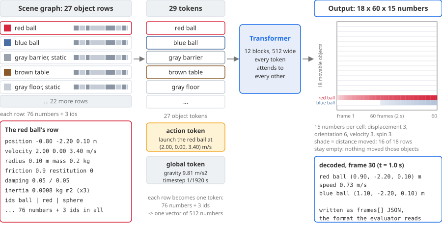
Input and output on the first proposal's sample task (the benchmark's 2 s, 76-number tokens): object rows in,
one slot per movable object and frame out. Every number comes from the real manifest and PhysX rollout.
The step-wise design: what became of variant D
The first proposal's variant D predicted the change over one frame and fed it back sixty times. The scaled study made it
the design that works: the change over a block of six frames (0.2 s), fed back fifteen times, with the relative geometry of
the nearest objects recomputed at every block, the built-in motion for free flight and mechanisms underneath the network's
correction, and three rules applied at generation (lift pieces onto the floor, no new overlap on the exact shapes with the
separation exchanged as momentum, objects at rest stay until something reaches them). Trained by regression, one pass per
block, it is the most accurate simulator of the family: 0.435 m average position error over 3 s on the test scenes against
0.58 m in one pass (section 4). Its weak point is the loop itself: each block is accurate to about 2 cm, but small speed
errors compound over the fifteen blocks (K11). Flow matching per block is the generative member of
the same design (0.555 m), and block diffusion trails it.
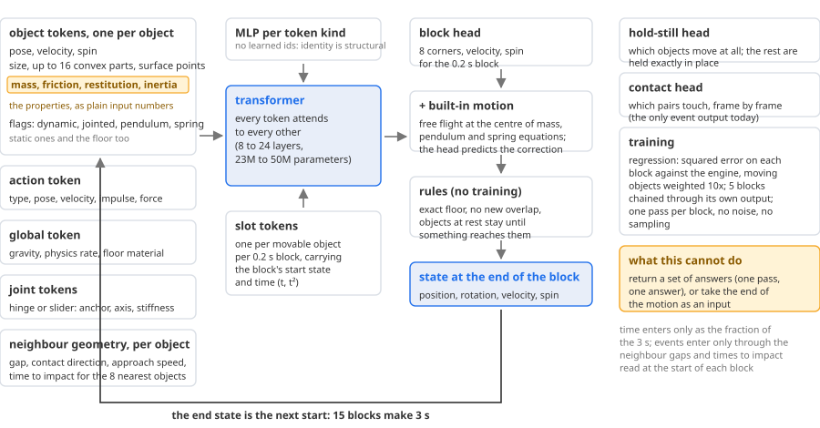
The step-wise regressor (iteration 6): one pass per 0.2 s block, chained; the properties enter as input numbers,
or as the "unknown" code since October.
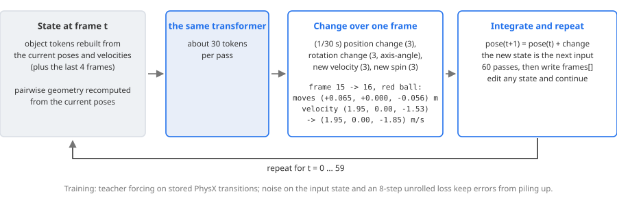
The loop as first drawn, one frame per pass on the sample task; the numbers are the recorded change from frame 15
to 16. The trained models take six frames per pass.
Positions and velocities are the recorded PhysX states of the sample rollout
(x and z components; y is constant at -2.20 m); the change shown each tick is the quantity one network
pass of the step model has to predict.
6. Training objectives, as the two networks are trained
Objectives (1) to (9) are listed in section 3; this is how the two networks in use combine them.
The step-wise regressor (objective 6, with 9). Each training step draws eight blocks per rollout at random
block starts, from the engine's own state there; blocks in which two movable objects begin to touch are drawn three times
out of ten. The loss is the squared error of the block's corners, velocity and spin against the engine (moving objects
weighted 1, still ones 0.1), plus cross-entropy for the hold-still head and the contact head and the no-penetration loss
on close pairs. In the new runs 15 percent of the objects (and every object in 10 percent of the examples) have their
properties replaced by the training mean before anything reads them, and a property head is trained to recover them; in
another 10 percent of the blocks the block's true motion is shown to the object tokens and only the property head is
trained. After 40,000 such steps a second stage chains five blocks through the model's own output for 8,000 steps, so the
errors a block makes are corrected where they are made.
The masked flow model (objective 8). The one-shot configuration, 23 million parameters, trained on the same
subset for 40,000 steps. Each example draws its question from the fixed mixture (forward 40 percent, properties 15, cause
15, unknown properties 15, mixed 15), one noise level, and the hidden tokens are noised and denoised together; the loss is
the flow-matching error on the hidden tokens plus the contact head. One run adds the cycle term from a quarter of training
on, one does not, so its effect can be measured. Every term is logged separately (the motion loss by question, the property
loss, the action loss, the contact loss, the cycle loss), and validation answers all four questions on held-out rollouts.
Prediction. The regressor: one pass per block, fifteen blocks. The masked model: 20 to 50 Euler steps from
noise; for the cause question several candidate histories are sampled, each candidate's action is replayed forward by the
same network from the state that action produces, and the candidate whose replay ends closest to the given end is kept.
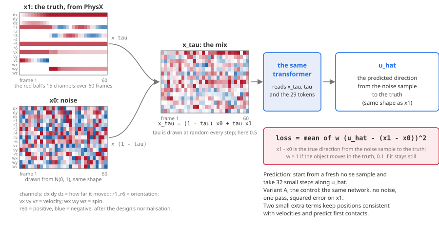
Flow matching on the sample task: the stored PhysX trajectory (the red ball's 15 channels are shown) is mixed with
noise; the network predicts the direction back to the truth and is scored on the gap. The masked model does the same for
the property and action tokens.
The real tensor has 15 channels per object per frame; this animation shows two of them,
the red ball's x and z, over the 61 recorded frames. The blue arrows come from a fixed perturbation of
the true direction, standing in for an untrained network; nothing here is a trained model's output.
7. Diffusion Forcing variant
Same data, same network, one change in training: each frame gets its own noise level instead of one
level for the whole tensor. At sampling time the frames are denoised in order, early frames ahead of late
ones, so a frame is predicted while the frames before it are already clean; a known prefix is simply
frames at noise level zero. Rollouts can extend past 60 frames by sliding the window.
What the scaled study found. Trained one-shot on its data, Diffusion Forcing trailed every other member
by a wide margin (acted-object error 1.42 m against 0.45 m for regression, measured even on training scenes), and it was
not taken further as a simulator. Its idea survives: the masked flow model gives every token its own noise level, which is
exactly what lets a given token stay clean while hidden ones are generated, and what a schedule that cleans the key events
first needs (section 8).
8. Key events first, then the motion between them (proposal, 31 October)
The step-wise loop has no view of the whole motion: a block knows the state it starts from and nothing about where the
motion is headed, so a small speed error in one block becomes a wrong position in every block after it
(K11). A result on language models suggests the opposite order. Next-Concept Modeling (Kumbong, Khare
and colleagues, Stanford, arXiv 2610.14162, October 2026) writes text coarse
to fine: a learned tokenizer turns a passage into a hierarchy of discrete codes, and a transformer predicts every code of
one level in parallel from the levels before it, one pass per level, 10 to 31 times faster than a diffusion language model
at comparable quality. Text has no natural coarse level, so they learn one. A trajectory has one: its key
events. Over three seconds a thrown crate leaves the hand, lands, slides into a second crate and comes to rest;
between those moments it is in free flight, sliding or at rest. Flight and rest the built-in motion and the generation
rules above give exactly, and a slide is a steady deceleration. The hard, discrete part of a motion is which events happen,
between which objects and when. The proposal is to predict that part first.
Two levels. The coarse level is the schedule of key events: for each movable object the frames at which
its regime changes (a contact begins or ends, it leaves its support, it topples, it comes to rest), the partner of each
contact, and the object's state at those frames, its key frames, plus its state at 3 s. The fine level is
the motion between consecutive key frames. The coarse level is small (a few events per object, none for most) and discrete
in its structure, so it is generated: flow matching over the key-frame states with a head for the kind of event and its
partner. A grazing contact that may or may not happen is then a fork in the schedule, two samples, not a blur in the
motion. The fine level is nearly deterministic once its key frames are fixed, so it stays with the step-wise regressor,
with two inputs added to every block: the key frame its segment must reach and the event there. One segment is the question
"the motion between a known start and a known end", one of the mixed masks the masked flow model already draws in training
(section 13). Key frames sit on block boundaries (0.2 s); events closer together than that are merged.
What changes in the network. Nothing in the tokens of this section; two things in the attention and the
heads. The coarse tokens (one per key frame) and the fine slots (one per block) sit in one sequence under a
block-causal mask across levels, the paper's second ingredient: a coarse token attends to the scene, the
action and the other coarse tokens; a fine slot attends to the scene, the action, the coarse tokens and the fine slots of
its own segment; nothing attends from the fine level back to the coarse one, and nothing from one segment to another. One
forward pass therefore trains both levels at once, with the key frames teacher-forced from the recorded motion, and
generation runs the coarse level first and every segment after it, in parallel, since each starts and ends at a known key
frame. A speed error no longer travels past the next key frame. The paper's third ingredient matters most here: during
training a share of the key frames the fine level reads are corrupted (shifted by a block, moved, dropped
or invented), so the fine pass learns to reach an imperfect key frame gracefully instead of trusting it. It is the same
medicine as the chained-block training of section 6, one level up.
\[ \text{attention } u \to v \text{ allowed iff}\quad v \in \{G, a\}\ \ \text{or}\ \ u, v \in \mathcal{K}\ \ \text{or}\ \ \big(u \in \text{seg}_k,\ v \in \mathcal{K}\big)\ \ \text{or}\ \ u, v \in \text{seg}_k \]
Where the key frames come from. The event extractor of section 9 (D1), run on the
recorded motion with the engine's contact episodes: contact start and end per pair, loss of support, topple and rest, at
the frame they occur. The coarse targets are measured, not annotated by hand, and the Dataset V2 records already carry them
as timed events. The coarse pass itself reads only the scene and the action; recorded events are training targets for it
and conditioning for the fine pass, never an input at generation time.
The risk, stated plainly. A wrong coarse pass cannot be repaired below it. If the schedule misses the
collision, the fine pass fits a smooth motion in which nothing collides, and it looks plausible; if a key frame is 20 cm
off, the fine pass reaches it exactly. The errors change character, from drift to confident mistakes, and whether they also
shrink is what the experiment has to show. Three safeguards: the fine pass is scored with the recorded key frames (the
ceiling: what a perfect schedule buys) and with the predicted ones, separately; the coarse pass is scored as an event
detector (precision and recall of events with a tolerance of one block, the error of the key-frame states and of the end
state), not only through the final motion; and the fine pass keeps its dense loss on every frame, so the motion between
events is not free to drift. Where the coarse pass is unsure, the schedule carries a spread and the motion inherits it,
which is the right behaviour in contact physics: a crate that barely reaches the edge of the table either falls or does
not, and both futures belong in the sample set.
What it costs, and what to measure first. A regression rollout is fifteen passes already; this design adds
one coarse pass and makes nothing faster. The gain, if it comes, is accuracy and consistency. Two measurements need no
training and come first: inside the step-wise loop, restore the recorded state at a few key frames only (the sampler's
teacher input takes a mask per block and channel) and read off how much of the 1.5 m of drift a perfect schedule would
remove; and on the masked flow model, clean the patches at the event times first and the others after, a change of the
noise schedule alone, against the ordinary sampler on the same test rollouts.
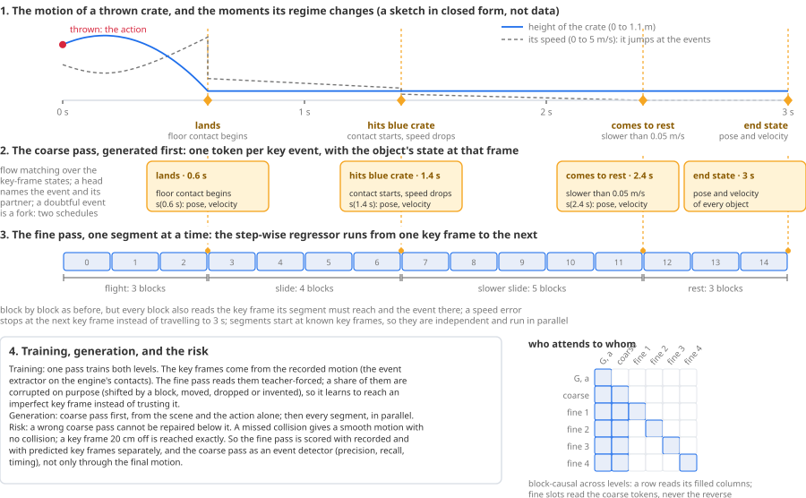
Key events first. The coarse pass writes one token per key event with the object's state there; the fine pass fills
each segment between two key frames with the step-wise regressor, segments independently. The grid is the block-causal mask
across levels: a row reads its filled columns. The motion is a sketch in closed form, not data.
WM-L1to doThe ceiling, without training. In the step-wise loop, restore the recorded state at the key frames only
(the extractor's events, snapped to block boundaries), first the velocity channels, then the pose, and measure the position
error at 3 s against the free-running 1.5 m and the 18 cm of K11's every-block control. The gap is what a perfect coarse
pass could buy; if it is small, the proposal stops here.
WM-L2to doThe coarse model. Key-frame states and the end state as flow-matching targets, an event head (kind,
partner, block) trained by cross-entropy, on the masked flow model's tokens with the recorded events as targets. Scored as
an event detector against the extractor's events on held-out rollouts (precision, recall, onset error) and by the error of
the key-frame and end states; the spread over samples reported next to the forks in the data.
WM-L3to doThe fine model. The step-wise regressor with a target key frame and an event token per block, trained
segment by segment with the recorded key frames, a share of them corrupted; then on the coarse model's own schedules.
Reported with recorded and with predicted key frames separately, in event and in quiet windows, next to the chained
5-block model of iteration 6.
WM-L4to doBoth levels in one network. Coarse tokens as a first block and the fine slots as segment blocks of one
sequence under the block-causal mask, trained in one pass, so the fine level's use of the coarse tokens is learned through
attention rather than through an added input; compared with L2 plus L3 as separate networks.
9. Counterfactuals, events in words, and error bands
Three things that make the model usable beyond a position error. Counterfactuals are input edits (built in,
and measured): the inputs are the explicit scene graph and the explicit action, so a counterfactual is an edited input
(change the friction in the table's row, move the cup, change the launch vector, remove an object) followed by a second
prediction; mid-trajectory questions clamp the known frames and continue from an edited state. The training generator
randomises friction, restitution, mass, placements and actions, otherwise the model ignores those inputs; attribute sweeps
and removals are training inputs, and the evaluation script measures whether the predicted change under an edit goes the
engine's way (76 percent for the old one-pass model; not yet measured for the current models). Words and
error bands (D and E below) are still to do.
Scene graph + action, model, outcome, drawn twice: the second run edits one field (amber) and
samples again; the difference between the two outputs is the counterfactual answer. The second outcome is
a sketch, not a simulation.
Counterfactuals about what was only observed. The edit above assumes every property of the scene is known.
For a scene that was only observed, a counterfactual takes the three steps of causal inference (abduction, action,
prediction): infer what is hidden from what was seen (the backward questions of section 13), change one thing, and predict
forward with what was inferred. The spread of \(\hat P\) carries into the spread of \(Y'\) (E1); PhysX
checks the answer by simulating the edited scene with the true properties, as in the benchmark's twin pairs.
Saying what happens, and how sure it is (to do). The model should say in words what its predicted trajectory
contains, and when, while staying faithful to that trajectory even when the trajectory is wrong; and it should attach an
honest error band to what it predicts, which matters most on real scenes, where the scene graph itself is estimated from
photographs. The uncertainty items take up two ideas of the scaled study, several hypotheses (E5) and a
spread when properties are unknown (E3), and serve the step from photographs to a scene graph
(I1).
D. A description in words that cannot contradict the trajectory
The text describes the events found in the model's own predicted trajectory, so it cannot claim a collision that
the trajectory does not contain. The same extractor, run on PhysX, gives the training targets and the list of what the
prediction missed.
What PhysX did: events extracted from the sample task's real rollout
0.00 s The red ball is launched at 3.9 m/s, 60 degrees up.
0.33 s It reaches its highest point, its centre 0.68 m above the floor.
0.46 s It passes over the gray barrier with 22 cm to spare.
0.69 s It lands on the floor.
0.87 s It hits the blue ball.
0.90 s The blue ball starts rolling.
2.00 s Both balls are still rolling at about 0.6 m/s; the blue ball is 0.73 m from where it started.
What a faulty prediction would say (illustration, not a model output)
0.00 s The red ball is launched at 3.9 m/s, 60 degrees up.
0.20 s The blue ball starts moving although nothing touches it. Impossible: motion without a cause.
0.71 s The red ball lands 5 cm inside the floor. Impossible: it sinks.
2.00 s The red ball comes to rest 0.4 m short of the blue ball.
Compared with PhysX: missed the hit at 0.87 s; extra motion of the blue ball before any contact.
WM-D1to doEvent extractor, fixed code. One function turns any trajectory with contacts into a list of timed events,
\(\mathcal{E}(s_{1:T}, \kappa) = \{(t,\ \text{type},\ i,\ j,\ \text{value})\}\): a contact begins or ends, an object lands, comes to
rest, tips over, enters or leaves a region or a container; and the impossible ones: an overlap deeper than 5 mm, sinking into a
support, motion outside the causal cone of WM-A2, an energy gain (WM-B3). Run on PhysX it labels every rollout for free, and most
of it exists already in the benchmark's goal checks (contacts, deadlines, end regions, rest). Events written by the language
model that generates the scenes are needed only for intent ("the ball was meant to land in the box").
WM-D2to doEvent head, trained on PhysX and consistent with itself. A light head on the transformer's output slots predicts
the events directly (per object pair and frame: a contact begins or ends; per object: lands, rests, tips, enters a region). It is
trained on the PhysX events and pulled toward the events of the model's own trajectory. Where the two disagree, the model
contradicts itself, which is a useful flag of low confidence:
\[ \mathcal{L}_{\text{ev}} = \mathrm{BCE}\big(\hat e,\ \mathcal{E}(s_{1:T}, \kappa)\big) + \lambda\, \mathrm{BCE}\big(\hat e,\ \mathrm{sg}[\mathcal{E}(\hat Y, \hat\kappa)]\big) \]
WM-D3to doVerbalizer. Events become sentences: first with templates (exact, no model), then with a small language model
fine-tuned on pairs of event list and paragraph, its wording varied by a larger model that paraphrases the template text while the
facts stay fixed. The text is parsed back into events and must reproduce the input list exactly. A language decoder that reads
the hidden states directly can come later, only with this round-trip check: a decoder that reads features is free to describe
what usually happens rather than what this trajectory shows.
WM-D4to doAnomalies and differences in words. Every imperfect prediction made during training is an example of an
impossible event with an exact label (overlap depth, sinking, unexplained motion), so no special data set of anomalies is needed:
the toy models alone overlap objects by a median of 15 to 34 cm. Comparing the predicted and the PhysX event lists gives missed,
extra and late events, and event-level F1 and timing error join the metrics next to ADE. Captions of rendered frames by a
vision-language model stay an outside check that the text matches what a person sees, and the only option on real scenes
without a simulated truth. They are not training labels: the geometric labels are exact, and captions miss centimetre
overlaps.
E. Error bands that mean something
Uncertainty from the input (a scene graph estimated from photographs) and from the model, propagated together. The
chart is a sketch of the intended display, not a model output.
WM-E1to doTwo sources, propagated together. Input uncertainty: the perception step returns each property with a range
(position, size, mass, friction), the scene graph is sampled \(K\) times from it, and every sample is predicted. Model
uncertainty: generative members draw \(S\) futures each; the regressor needs an ensemble of 3 to 5 networks or a spread head.
The \(K \times S\) futures run as one batch; on the toy model, 64 futures take about 3 s with flow matching or 0.1 s with the
regressor:
\[ \tilde G^{(k)} \sim q(G \mid \text{photographs}), \qquad Y^{(k,s)} \sim p_\theta\big(\cdot \mid \tilde G^{(k)}, a\big), \qquad
\text{band}^i_t = \big[\, Q_{0.05}\{\hat p^{i,(k,s)}_t\},\ Q_{0.95}\{\hat p^{i,(k,s)}_t\} \,\big] \]
WM-E2to doWhat changes in training. Feed scene graphs perturbed the way perception errs, while the targets stay the
PhysX rollout of the true scene, so the model learns the outcomes that a noisy description allows; keep physical parameters
randomised, and hidden at times (G2). For the regressor, add a spread head trained with the Gaussian
likelihood, or quantile heads with the pinball loss; generative members need no new head:
\[ \min_\theta\ \mathbb{E}_{G,\ \tilde G \sim n(\cdot \mid G)}\ \mathcal{L}\big(f_\theta(\tilde G, a),\ \Phi(G, a)\big), \qquad
\mathcal{L}_{\text{NLL}} = \frac{\lVert y - \mu_\theta \rVert^2}{2\sigma_\theta^2} + \log \sigma_\theta, \qquad
\rho_q(u) = \max\big(q\,u,\ (q - 1)\,u\big) \]
WM-E3to doCalibration with a guarantee (conformal prediction). On held-out simulations, score each trajectory by its worst
normalised error and scale the band by the right quantile of those scores; a new true trajectory then stays inside the band with
probability at least \(1 - \alpha\). Report coverage (it must match, for example 90 percent) and band width, by kind of task;
on real scenes, check against PhysX run on the digital twin:
\[ r_j = \max_{t,\,i} \frac{\lVert p^i_t - \hat p^i_t \rVert}{\hat\sigma^i_t}, \qquad \hat c = r_{(\lceil (n+1)(1-\alpha) \rceil)}, \qquad
\Pr\big[\, \lVert p^i_t - \hat p^i_t \rVert \le \hat c\, \hat\sigma^i_t\ \ \text{for all } t, i \,\big] \ge 1 - \alpha \]
A first test needs no photographs, as the scaled study proposes: hide an object's mass or friction, sample futures, and check that the band covers what PhysX does over the plausible values.
WM-E4to doBands in metres, probabilities for forks. A "5 percent band" of a coordinate depends on where the origin is, so
bands are stated as distances (the 90 percent band is within 4 cm at 1 s) or relative to the distance travelled. Where the
outcome forks (the ball passes left or right of an obstacle), a band through the middle covers a path no sample takes: report
each branch's probability with a few sample paths, and give events probabilities too ("hits the blue ball in 7 of 8 samples,
between 0.84 and 0.90 s"), which the verbalizer of D can say in words.
WM-E5to doSeveral hypotheses for the regressor. A deterministic regressor averages forks: a ball that may bounce left
or right is predicted to go straight, an object that may topple or slide does half of each. Predict \(K\) futures with
probabilities and train only the one closest to the truth (winner takes all), as in trajectory forecasting (MultiPath, MTR);
the probabilities are the branch probabilities of E4, at the fixed cost of \(K\) outputs instead of many samples. From the
scaled study:
\[ k^\star = \arg\min_k \big\lVert \hat Y_k - Y \big\rVert_w, \qquad
\mathcal{L}_{\text{wta}} = \big\lVert \hat Y_{k^\star} - Y \big\rVert_w^2 - \lambda \log \hat\pi_{k^\star} \]
10. JEPA variant (C)
An encoder maps a scene-graph state to one embedding per object; a slowly updated copy of the encoder
embeds the future states as targets; a predictor conditioned on the action and the frame offset predicts
the future embeddings for all offsets at once. The loss is taken in embedding space with variance and
covariance regularisers, and a probe decoder maps embeddings back to states for scoring. Its role is
latent planning and a bridge to visual inputs; it is not expected to beat direct state prediction on an
exact 15-number state.
Variant C: the predictor works in embedding space; the dashed arrow marks the slowly updated
target encoder; the probe decoder exists only so that the same state metrics can be applied.
What the scaled study found. Trained one-shot, JEPA with a state decoder was as accurate as regression and
more accurate than flow matching (0.55 to 0.57 m against 0.62 to 0.64 m on unseen scenes; on the validation scenes 0.39 m
acted-object error against 0.45 m for regression). Its distinct promise, planning in the latent space and a bridge to visual
inputs, has not been tested, and no step-wise version was trained; the step-wise regressor took over as the forward
simulator. The variant stays available in the code.
11. Failure modes, physics-grounded fixes and shape descriptors
Two failures show up in every member trained so far. Ghost motion: objects that stand still from the
start, and that nothing in the action touches, are predicted to drift (in the toy runs 84 to 100 percent of still objects
move more than 1 cm). Inconsistent kinematics: predicted positions and velocities do not agree with each
other at the same frame, so no physical motion could produce them; with objects also overlapping by a median of 15 to 34 cm,
none of 58 held-out predictions passes the benchmark's checks. A higher weight on still objects and soft position-velocity
and overlap penalties were tried on 96 samples and changed the ghost-motion rate little, so the plan puts fixes that hold
by construction first and physics penalties second. Each item is a feature to
implement in the shared predictor; the ids are for tracking.
Since then. The scaled study's physics iterations built first versions of A1, A2, B1 and B5
(Improved Results V1): the share of still objects that its regressor moves fell from 84 to 1 percent and the energy gained from nowhere
from 3.8 to 0.5 J per simulation, at an average position error about 11 percent higher. Step-wise prediction
(F1), corners as outputs, built-in gravity (B2) and built-in joint equations followed in iterations 2 to
5 (section 4). Objects still pass through each other at speed
(section 12), and errors compound over chained blocks (K11).
Each item's badge gives its state; items that came from the scaled study say so.
WM-A1first versionMotion gate. A head predicts whether each object moves at all, \(\hat\mu_i = \sigma(u_i)\), trained on
\(m_i = \mathbb{1}\big[\max_t \lVert p^i_t - p^i_0 \rVert \gt 1\,\text{cm}\big]\); the trajectory is the still pose plus the gated change,
and objects with \(\hat\mu_i \lt 0.5\) are pinned exactly at inference:
\[ \hat Y^i = Y^i_{\text{still}} + \hat\mu_i \big( f_\theta(x)^i - Y^i_{\text{still}} \big), \qquad \mathcal{L}_{\mu} = \mathrm{BCE}(\hat\mu_i, m_i) \]
First version: "hold still" in Improved Results V1, a per-object logit, with objects predicted still kept exactly in place. Still objects moved by more than 5 cm fell from 84 to 4 percent for regression and from 70 to 18 percent for flow matching, and the regressor's position error did not rise.
WM-A2first versionCausal-cone penalty. An object may start moving only once something moving touches it (a support counts).
Activation spreads along contacts from the acted objects (and objects already moving at \(t = 0\)); motion outside the
cone is penalised. In training the true contacts \(\kappa\) can stand in for \(\hat\kappa\):
\[ \zeta^i_0 = \mathbb{1}[i \text{ acted on or moving}], \quad \zeta^i_t = \max\Big(\zeta^i_{t-1},\ \max_j \zeta^j_{t-1}\, \hat\kappa^{ij}_t\Big), \qquad \mathcal{L}_{\text{cause}} = \sum_{t,i} \big(1 - \zeta^i_t\big)\, \big\lVert \hat y^i_t - y^i_{\text{still}} \big\rVert^2 \]
A simpler first version is the "cause" rule of Improved Results V1: an object not acted on is penalised for moving before the frame at which it really starts to move, read from the PhysX truth. With hold still and the other rules, objects moved before being touched fell from 95 to 4 percent. The cone over predicted contacts is still to do: it needs no truth, so it also holds at inference.Second version (Improved Results V4, stage 2): the first-law gate holds an object with no cause (not acted on, not moving, not airborne, not touched or about to be hit by a moving neighbour) using the predicted geometry, at inference too and without reading the truth; it was neutral on the four-scene study.
WM-A3first versionLocal attention. Output slots of two objects attend to each other only when their collision boxes are within
reach (the distance the fastest object can travel in the horizon), as in graph-network simulators; far objects cannot
move each other. With blocks of length \(\tau\) (F1) the reach is short: 1 m per 0.2 s block at 5 m/s.
\[ \ell_{ij} = \frac{q_i^\top k_j}{\sqrt d} + b_\phi(g_{ij}) \ \ \text{if}\ \ g_{ij} \le \big(\lVert v_i \rVert + \lVert v_j \rVert\big)\, \tau + \delta, \qquad \ell_{ij} = -\infty \ \ \text{otherwise} \]
A soft first version runs in the step-wise models: attention between each object and its 8 nearest neighbours is biased by their box geometry (F2, the scaled study's "who is close to whom"); the hard mask by reach is still to do.
WM-A4first versionExact zeros. Add an L1 term on still objects' displacement (a squared error tolerates many small drifts), and
report the ghost-motion rate next to ADE on every run.
Related first version (Improved Results V4, stage 2): full loss weight for objects moving in the truth or in the prediction, the only addition there that lowered both position error (0.269 to 0.262 m) and passing through; a candidate at lower weight.
B. Kinematics: positions, velocities and physics that agree
WM-B1first versionIntegrate instead of predicting twice. Predict velocities and spins only and integrate them with the
evaluator's trapezoid rule, so positions and velocities agree exactly; keep the position loss on the integrated positions
so that integration drift is trained away (\(\mathrm{Exp}\) is the rotation of a rotation vector, \(\omega\) in world axes):
\[ \hat p_t = \hat p_{t-1} + \tfrac{\Delta t}{2}\,(\hat v_{t-1} + \hat v_t), \qquad \hat R_t = \mathrm{Exp}\big(\tfrac{\Delta t}{2}\,(\hat\omega_{t-1} + \hat\omega_t)\big)\, \hat R_{t-1} \]
First version: "integrate motion" in Improved Results V1 predicts accelerations, zero by default, and adds them up from the state just after the action, so positions always match velocities; direction reversals in mid-air fell from 4.5 to 0 per moving object for regression and from 166 to 0 for flow matching. Rotation is still predicted directly; integrating the spin is still to do.
WM-B2doneFree flight follows gravity. Integrated motion started from zero acceleration, so nothing taught gravity.
The construction proposed here is now built in: an object touching nothing falls ballistically from its centre of mass and
turns with constant angular momentum, and the network predicts only a correction,
\(\hat a^i_t = \big(1 - \hat c^i_t\big)\, \mathbf{g} + r^i_t\) with \(\hat c^i_t\) whether the object touches anything
(the floor counts) and \(\mathbf{g} = (0, 0, -9.81)\) m/s²; the penalty stays available if the correction drifts:
\[ \mathcal{L}_{\text{ff}} = \sum_{t,i} \Big(1 - \max_j \hat\kappa^{ij}_t\Big) \Big( \big\lVert \tfrac{\hat v^i_{t+1} - \hat v^i_t}{\Delta t} - \mathbf{g} \big\rVert^2 + \big\lVert \hat\omega^i_{t+1} - \hat\omega^i_t \big\rVert^2 \Big) \]
Done in Improved Results V4 (stage 2) and used by V5: on free flights the built-in motion is within 6 mm of PhysX,
and V5's free-fall error is 1.9 m/s² for regression and 2.0 for flow matching (PhysX: 0.02). The 9 to 10 m/s² quoted here
earlier came from a faulty measure that counted objects resting on the floor as airborne (PhysX itself scored 9.8 on
it).
WM-B3to doNo energy from nothing. After the action, kinetic plus potential energy may only fall (friction, inelastic
contacts), up to the evaluator's tolerance \(\delta\) (15 percent plus 0.03 J), with \(g = 9.81\) m/s²; the inertia \(I_i\) is
given in the object's own frame and the spin in world axes, hence the rotation by \(\hat R^i_t\):
\[ E_t = \sum_i \tfrac12 m_i \lVert \hat v^i_t \rVert^2 + \tfrac12\, \hat\omega^{i\top}_t \hat R^i_t I_i \hat R^{i\top}_t\, \hat\omega^i_t + m_i\, g\, \hat z^i_t, \qquad \mathcal{L}_E = \sum_t \mathrm{relu}\big(E_{t+1} - E_t - \delta\big)^2 \]
B3 and B4 are also the scaled study's proposal for what its rules leave: with step-wise prediction the energy gained from nowhere is 0.5 to 0.8 J per simulation for the best models, from 2.6 to 3.0 J in one pass (Improved Results V2).
WM-B4tried, not keptMomentum at contacts. When two objects touch only each other in a frame (no floor or fixed object involved),
their momentum changes cancel: \(m_i \Delta \hat v^i_t + m_j \Delta \hat v^j_t \approx 0\); a small soft penalty.
Tried (Improved Results V4, stage 2): the third law at impacts, applied only where PhysX itself satisfies it, made every measure worse (position error up 18 percent, toppling recall down to 34 percent).
WM-B5first versionNo overlap, no sinking. Penalise penetration between object parts (the convex parts, not one box per object)
beyond 5 mm, and any part below the floor:
\(\mathcal{L}_{\text{pen}} = \sum \mathrm{relu}(d^{ij}_t - 5\,\text{mm})^2,\ \mathcal{L}_{\text{floor}} = \sum \mathrm{relu}(-z^{i}_{\text{low},t})^2\).
First version: the floor and overlap rules of Improved Results V1, on one box per object. A bug found on 15 October had treated fixed objects stored after the moving ones (most walls, poles and ramps) as points, so overlap with them went unpenalised. The loss on the objects' pieces, with the contact direction kept from before the overlap, is F3.Relative overlap (Improved Results V4, stage 2), the depth divided by the moving object's thinnest side, lowers relative passing through by 28 percent at 12 percent more position error; a candidate at lower weight.
WM-B6to doTrain against the judge. The benchmark already screens predicted motion with numbers: free-flight position
residual 15 mm, velocity residual 0.15 m/s, rotation residual 10 degrees, energy increase, penetration 5 mm. Use the same
quantities as hinge losses, so the model is trained on exactly what it is judged by.
C. Shape and identity: what an object token must carry
Same mass, same velocity at the centre of mass: a ball rolls away, a chair slides, tips or stops. In free flight only mass
and inertia matter; every difference appears at contacts, through the shape of the contact surface (curved or flat), the
support polygon, the height of the centre of mass above it and how the mass is spread. The token therefore needs metric
geometry in the object's own frame, tied to the collision shape the simulator uses; category names and appearance only
correlate with it. Today's tokens carry bounding boxes, the inertia tensor and centre of mass, a primitive kind, and in the
scaled study a set of up to eight convex parts; the toy runs also had learned category, colour and asset ids, which the
design drops (C4).
WM-C1to doPhysical shape descriptors. Computed once per asset from the collision shape: principal moments and axes of
inertia; the resting support polygon and the height \(h\) of the centre of mass above it; the tipping angle toward each edge
\(k\) of the polygon, with \(d_k\) the distance from the centre of mass's projection to that edge; and the smallest radius of
curvature \(\rho_{\min}\) at the contact, which says whether the object can roll and about which axis (\(r_i\) is half the
diagonal of its box):
\[ I_i = Q_i\, \mathrm{diag}(\lambda_1, \lambda_2, \lambda_3)\, Q_i^\top, \qquad \theta_k = \arctan \frac{d_k}{h}, \qquad
\phi_i = \Big( \frac{\lambda_{1:3}}{m_i r_i^2},\ h,\ \min_k \theta_k,\ \text{support area},\ \rho_{\min} \Big) \]
WM-C2to doLearned metric shape code. Points sampled on the collision surface with their normals, in the object's frame
and in metres, encoded by a small point network trained together with the world model. Never rescaled to a unit sphere and
never made rotation-invariant: the pose is given separately, and together they must still say where the legs are relative
to the floor. The convex-part set stays.
In the scaled study this is a decision still to make, for when boxes and pieces are not enough after F3 to F6 (F7); it would also work on real depth data (I1).
WM-C3to doPretrained point-cloud features as a semantic channel. A frozen encoder such as Utonia (a Point Transformer
V3 trained without labels on many kinds of point clouds), pooled per object and added to the token. Useful for real scenes and
for matching objects to words. Kept only if probes and ablations show a gain: features trained for perception are not trained
to encode support polygons or inertia, so check first whether they keep absolute size and the direction of gravity in the
object's frame.
WM-C4to doNo learned ids, and the tests. Remove the colour and asset embeddings from the toy model (the scaled study's
predictor already has none). If a semantic channel helps, use an open-vocabulary embedding of the object's name or pretrained
point-cloud features, dropped at random in training, never a table over the training vocabulary. Then test: assets never seen
in training; the same scene with objects reordered, renamed or recoloured (the prediction must not change beyond the
reordering); probes of every descriptor for the quantities of WM-C1; and a counterfactual set with the same mass and the
same launch on different shapes (ball, box, cylinder, chair), judged against PhysX.
How to add them. Penalties act on outputs converted back to metres and metres per second, with masses and
inertias taken from the object tokens and \(\Delta t = 1/30\) s; inequality constraints are hinge losses; penalty weights
ramp up after a warm-up so that they do not stall early learning; every residual is reported on validation next to ADE,
the ghost-motion rate and the verdict agreement \(\alpha\). Suggested order: B1 and A1 (constructions, nothing to tune),
then A2 and B2 (they need the contact head), then B3 to B6; for shape, C1 and C4 first (cheap and exact), then C2 and C3.
12. Collisions: objects that pass through each other
In every model trained so far, with or without the fixes of A and B, a pushed traffic cone ends 8 to 24 cm inside a wall
instead of bouncing off a pole, and a dropped basketball sinks into a bucket. The geometry is in the inputs, but a model
that predicts the whole motion at once never compares one object's box with another's. The frame rate makes it worse: at 30
frames per second a cone pushed at 4.5 m/s moves 15 cm from one frame to the next, more than a wall is thick, so an overlap
check at frame times alone can miss the crossing. The scaled study therefore measures passing through on the oriented boxes
of the objects' pieces, three times per frame, as the deepest overlap beyond the real one (\(d_{ij}\) is the overlap depth
of objects \(i\) and \(j\), with poses interpolated between frames):
\[ \mathrm{pass}(\hat Y) = \max_{t,\ k \in \{0, \frac13, \frac23\},\ i \ne j} \Big( d_{ij}\big(\hat s_{t+k}\big) - d_{ij}\big(s_{t+k}\big) \Big)^{+} \]
All items come from the scaled study's physics iterations: F1 and F2 are its iteration 2 (Improved Results V2); F3 to F6 are iteration 3
(Improved Results V3), each on top of F1 and F2, F6 measured on a fixed 15,000 test simulations.
WM-F1doneStep-wise prediction. Predict 0.2 s (six frames) at a time, each block starting from the state the previous
one ended in, as learned particle and mesh simulators do (GNS, MeshGraphNets, FIGNet), with hold still (A1) in every block.
Three seconds are 15 blocks, and the action enters the first:
\[ \hat s_{6b+1\,:\,6b+6} = f_\theta\big(\hat s_{6b},\ G,\ a_b\big), \qquad a_0 = a,\ \ a_{b \gt 0} = \varnothing,\ \ b = 0, \dots, 14 \]
Done in Improved Results V2: the most accurate learned simulators so far, an average position error of 0.45 m
for regression and 0.60 m for flow matching against 0.49 and 0.63 m in one pass, and the same verdict as PhysX on 91 against
88 percent of test simulations. Noise on the start state during training (5 mm, 5 cm/s) did not help.
WM-F2doneWho is close to whom, recomputed every block. For each moving object and its 8 nearest objects: the gap
\(g_{ij}\) between their oriented boxes and its direction \(n_{ij}\) from \(i\) to \(j\) (separating-axis test), relative
position, rotation and velocity, approach speed and time to impact, used as an attention bias and as messages between the two
tokens, a soft form of the local attention of A3:
\[ u_{ij} = (v_i - v_j)^\top n_{ij}, \qquad \tau_{ij} = \begin{cases} g_{ij} / u_{ij} & \text{if } u_{ij} \gt 0 \\ \infty & \text{otherwise} \end{cases}, \qquad
\ell_{ij} = \frac{q_i^\top k_j}{\sqrt d} + b_\phi\big(g_{ij}, n_{ij}, u_{ij}, \tau_{ij}\big) \]
Done in Improved Results V2: a little more accurate (0.45 to 0.43 m for regression, 0.60 to 0.55 m for flow
matching), passing through unchanged (4.6 to 4.5 cm).
WM-F3doneNo-penetration loss on the pieces. Penalise overlap deeper than in the real motion, beyond 1 cm, in every
frame, each object's box against its neighbours' largest pieces. The depth is measured along the contact direction from the
last frame without overlap, so an object half way through a wall is pushed back, not through. It replaces the first overlap
rule of B5:
\[ \mathcal{L}_{\text{pen}} = \sum_{t,\, i \ne j} \Big( \big( d_{ij}(\hat s_t) - d_{ij}(s_t) - 1\,\text{cm} \big)^{+} \Big)^2, \qquad
d_{ij} \text{ measured along } n_{ij}(t_0),\ \ t_0 \text{ the last frame without overlap} \]
Measured in Improved Results V3: the clearest gain against passing through so far, 4.5 to 2.9 cm deeper than reality on average for regression and 4.3 to 3.0 cm for flow matching; simulations with a pair more than 5 cm too deep fall from 31 to 21 percent and from 32 to 23 percent, for 4 percent more position error.
WM-F4doneThe contact law. An object inside another by more than 5 mm must not keep moving inward along the contact
normal: the velocity-level non-penetration condition that physics engines enforce at every contact. Objects that start a new
contact in a block count twice in the loss, since the contact decides what happens next:
\[ \mathcal{L}_{\text{law}} = \sum_{t,\, i \ne j} \mathbb{1}\big[d_{ij}(\hat s_t) \gt 5\,\text{mm}\big] \Big( \big( (\hat v^i_t - \hat v^j_t)^\top n_{ij} \big)^{+} \Big)^2, \qquad
w_i = 2 \ \text{if } i \text{ starts a contact in the block, else } 1 \]
Measured in Improved Results V3: nothing measurable on top of F3 (2.9 cm), although in the cone clip the cone now stops upright in front of the wall instead of grazing into it.
WM-F5doneCorner loss. The distance between each object's eight predicted and true box corners \(c_k\), so position
and orientation are both in metres and a toppled tall object counts fully (the point-matching loss of 6D pose estimation).
New measures come with it: rotation and tilt error, and whether objects that topple in PhysX (upright after the action,
tilted beyond 45 degrees at the end) topple in the prediction:
\[ \mathcal{L}_{\text{corner}} = \frac{1}{8} \sum_{k=1}^{8} \big\lVert (\hat R^i_t c_k + \hat p^i_t) - (R^i_t c_k + p^i_t) \big\rVert \]
Measured in Improved Results V3: tilt error stays at 27 to 30 degrees, as without it; toppling recall, which F3 had lowered (43 to 25 percent for regression), comes back to 36 to 44 percent. Rotation needs another fix (K4, J5); a rotation study is running in the scaled study.Superseded by corners as outputs (Improved Results V4): the network outputs the 8 box corners and the pose follows by a rigid fit, the largest gain of the rotation study (position error down for both objectives, toppling recall 41 to 67 percent for regression on the four-scene study); used by V5.
WM-F6doneCollision guidance while sampling. No retraining: at every denoising step of a generative member, the current
estimate of the clean trajectory \(\hat Y\) is nudged down the gradient of an overlap energy, measured along the contact
direction from before the overlap; regression gets five such correction steps after its prediction (as in MotionDiffuser and
CTG):
\[ \hat Y \leftarrow \hat Y - \eta\, \nabla_{\hat Y}\, C(\hat Y), \qquad C(Y) = \sum_{t,\, i \ne j} \Big( \big(d_{ij}(Y_t)\big)^{+} \Big)^2 \]
Measured on a fixed 15,000 test simulations (Improved Results V3): guidance beats the no-penetration loss against passing through, simulations with a pair more than 5 cm too deep falling from 32 to 10 percent for regression (loss: 21 percent) and from 33 to 16 percent for flow matching, for at most 2 percent more position error; it lowers toppling recall a little.
WM-F7waiting for a decisionPoint clouds for contact geometry. Only if boxes and pieces are not enough after F3 to F6: surface points per
object as the shape input and for contact distances (C2), which would also work on real depth data
(I1).
What worked, in the end. Two things lowered passing through without hurting accuracy and are in use: the
collision guidance while sampling (F6), and V6's contact constraint at generation on the exact part shapes, which pushes
overlapping pieces apart and exchanges the separation as momentum (test error 0.443 to 0.434 m, passing through 4.2 to
1.9 cm). The no-penetration loss (F3) helped at a small cost in accuracy; the contact law (F4) added nothing measurable; the
corner loss (F5) was superseded by corners as outputs. The failure analysis settled the remaining question: given about
1,900 pushes of one scene, a plain network stops the cone at the wall, while stronger losses, training on its own rollouts
and shorter steps do not; so the missing ingredient at collisions is data on the interaction, not another term. Fast impacts
inside a frame (K5) and errors compounding over chained blocks (K11) remain open.
13. Answering backwards: properties from a recording, the cause of an end state
A physics engine runs only forward. To find which mass or friction explains an observed bounce, or which push produced a
motion, it has to be run many times inside a search (simulation-based inference). A learned simulator can answer such
questions in one pass, with a spread when the motion does not settle the answer. Since October this is no longer only a
plan: the masked flow model (objective 8) and the regressor's property head (objective 9) had their first training runs
on the subset of section 14, and the checks below are in the code. Write \(P = \{m_i, \mu_i, e_i, I_i\}\) for the properties
that are hidden, \(G_{\setminus P}\) for the rest of the scene graph and \(Y_{\text{obs}}\) for an observed motion.
Why ask backwards at all. A picture from outside the laboratory. An aircraft drops off radar, and
minutes later it is found crashed. Its last tracked state is known (position, heading, speed, altitude), the wreckage
says where and how it ended, and the minutes between are the question. Investigators answer it forward today: candidate
histories are flown through a simulator until one matches the evidence, a search by hand over what could have
happened. A model that can be asked backwards proposes the histories consistent with the last known state and the end,
returns several when the evidence allows several, and each is checked by running it forward. That is the shape of the
cause question below, on a much smaller stage: rigid bodies on a table over three seconds, where friction and inelastic
contacts erase much of the history, as drag and unknown control inputs do in the air. The aircraft is the motivation
for the ability, not a claim about this model.
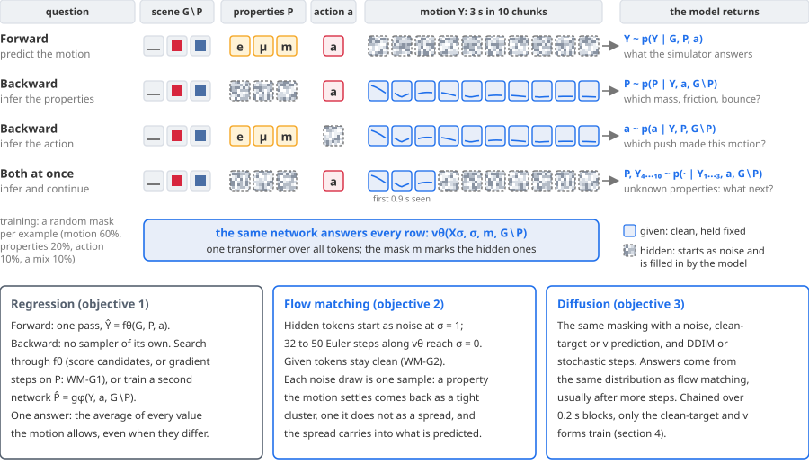
One model, both directions. Each row is one question to the same network: given tokens (solid) stay
fixed, hidden ones (speckled) start as noise and are filled in. Predicting the motion, inferring the properties or
the action, inferring from a beginning and continuing, and reconstructing a history from its end are different masks
of one model (G2, G3); a regressor answers backward questions only by search
or with a second head (G1, objective 9). In the built model the end is given as the final frame only,
not the last chunk shown here.
●●
solid dots: positions given to the model○ hollow:
generated by it● gray: still noise● amber: property samples▲ true value▮
regression's single answer■ under a token: hidden▢ dashed outline: the start pose, given
faint outlines: the recording (question 2) or one sampled history each (questions 3 and 4)
A toy scene in closed form: parabolic flights; a landing keeps a fraction e of the vertical speed
and loses \(\mu(1 + e)\) times it horizontally; sliding slows at \(\mu g\); a one-dimensional collision with the 1 kg
crate. Samples are drawn from the exact posterior of this toy over a grid of 20,196 property values, given the
tracked centres with 3 cm noise: what a perfect generative model would return; the histories drawn are the distinct
ones among 40 samples. Regression shows that posterior's mean. Nothing here is a trained model's output.
A question for this model is a choice of what is given and what is wanted. Properties from a recording
(the bidirectional ability): the scene, the action, the start and the whole motion are given; the property tokens of the
movable objects start as noise and are filled in. The masked flow model returns samples, which is what an unidentifiable
property needs: a mass that shows only in a collision comes back as a spread when there was no collision and as a tight
cluster when there was one. The regressor's property head returns one value per object, averaged over the blocks in which
the object moves or turns. The cause of an end state (the priority): the scene, the properties, the start
at rest and the final frame of every object (its pose and velocity at 3 s, nothing of the 3 s before) are given; the action
token and the whole motion are generated together, so each sample is one coherent story that starts at \(s_0\) and ends at
\(s_T\). "No action" is a possible answer: a rollout in which nothing happened has the zero token, and the model is trained
to return it when the end state equals the start. Several samples are the set of causes the end allows; each candidate's
action is replayed forward by the same network from the state that action produces, and the one whose replay reaches the
given end is kept. Forward with unknown properties: some or all property tokens are hidden, the motion is
generated from the distribution of properties the model has seen for such objects, and the hidden tokens are narrowed as
the motion unfolds; in the regressor, attribute dropout does the same with one answer. Intervening mid-way
and counterfactuals need no new training: stop at a block, apply the second action to the predicted state
and restart; edit a property or drop an object and predict again (section 9).
\[ P \sim p_\theta\big(P \mid Y_{\text{obs}}, a, G_{\setminus P}\big)\ \text{(properties)}, \qquad
(a, Y) \sim p_\theta\big(a, Y \mid s_0, s_T, P, G_{\setminus P}\big)\ \text{(cause)}, \qquad
(Y, P_{\text{hidden}}) \sim p_\theta\big(\cdot \mid a, s_0, P_{\text{given}}, G_{\setminus P}\big)\ \text{(unknown properties)} \]
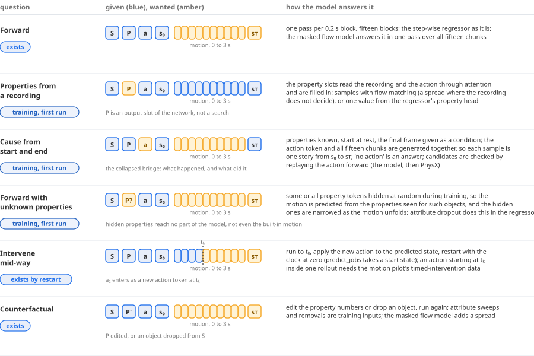
Six questions as given (blue) and generated (amber) tokens, how each is answered, and its status on 30 October.
What is built
Both networks share the tokens and the encoder of section 5. The masked flow model is the one-shot
configuration (23 million parameters) with three kinds of token that can be hidden: a property token per movable object
(six numbers: log mass, friction, restitution, the three diagonal inertia terms, standardised), the action token (42 numbers
and a pointer to the acted object) and the fifteen motion patches. The end state enters the object tokens as a condition
through its own input layer. The step-wise regressor keeps its design and gains attribute dropout, a
property head on the object tokens and an input for a block of observed motion. Both train on the subset of section 14.
A review of the code on 29 and 30 October by a second model found and we fixed five problems, each now covered by a
test: hidden properties were still reaching the built-in motion and the generation rules (they are now replaced in the one
table every part reads); the action token carried the impulse per unit mass, so the mass was inside the action; the
decoded action was validated on its type, object and velocity only (now on every parameter, with limits, and a pointer at
no object is invalid); the forward replay of a candidate started from rest instead of from the state the candidate's action
produces; and the end-state checks compared positions only (now position, orientation, velocity and spin). The code map is
docs/MASKED_WM.md in the simagent checkout.
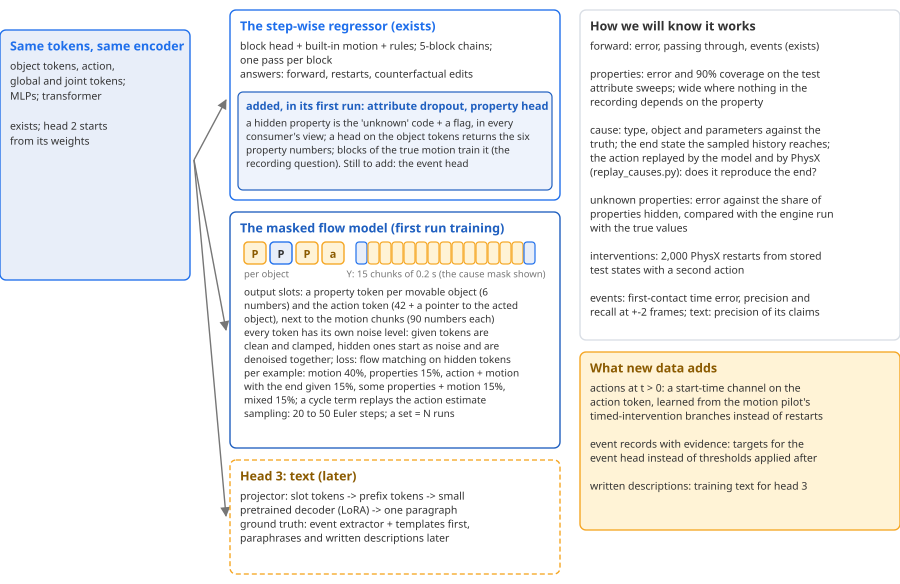
What is built: one encoder, two networks in training, the text head still to come. Blue exists, the lighter blue
is in its first run, dashed amber comes later.
How it is checked
During training, validation answers every question on held-out rollouts: the forward error; the property errors against
predicting the training mean, on objects whose motion carries evidence; for the cause, the accuracy of the type and of the
acted object, the error of every parameter the true type has, the share of decoded actions that are valid, how close the
generated history ends to the given end (position, orientation, velocity, spin) and how close the network's own replay of
the generated action ends, for the first sample and for the candidate kept among several. The independent check is PhysX:
a script re-runs the decoded action from the same rest start, with the rollout's recorded property change or removed object
restored, next to the true action (the ceiling) and no action (the floor), and asks whether the recorded end is reproduced
within 5 cm, 15 degrees, 0.1 m/s and 0.5 rad/s. It runs on the first checkpoints, on the dominoes and toss scenes and the topple, hit and slide tasks of
the test split, with qualitative cases (the decoded action next to the true one, the replayed motion next to the recording).
What this does not do yet. The start is always the rest state (the stored rollouts start settled), only the
first of up to two actions is inferred, a removed object is not a cause the model can name, and the kept candidate is the
most consistent of the samples, not the most likely history; an exact likelihood under the flow is possible but costs
several times the sampling and is not planned.
WM-G1to doBackward answers from the forward model, as a baseline. On the test what-if simulations, where a mass,
friction or bounciness was changed to a known value, recover the value from the motion with the trained model and no
retraining: by scoring a batch of candidates \(\mathcal{C}\) in one pass, and by gradient descent through the model.
Compare with the truth and with chance, separately for motions with and without collisions: a mass shows only in a
collision, a bounciness only in a bounce. With the action in place of \(P\), the same search asks which push produced a
motion:
\[ \hat P = \arg\min_{P \in \mathcal{C}} \big\lVert f_\theta(G_{\setminus P}, P, a) - Y_{\text{obs}} \big\rVert_w^2, \qquad
P \leftarrow P - \eta\, \nabla_P \big\lVert f_\theta(G_{\setminus P}, P, a) - Y_{\text{obs}} \big\rVert_w^2 \]
WM-G2first run doneOne model for forward and backward questions. One generative model on properties, action and motion
together, \(X = (P, a, Y)\), hiding a random part \(m\) in each step: objective (8) of section 3. As built, the mixture is
the motion in 40 percent of the examples, the properties in 15, the action and motion with the end given in 15, motion and
some properties in 15, mixed in 15; one denoising run returns masses, frictions or the action from an observed motion,
\(P \sim p_\theta(P \mid Y_{\text{obs}}, a, G_{\setminus P})\), with a spread where the motion does not determine them.
With the motion hidden it is the forward model of section 3; hiding only the later frames conditions on a known beginning,
as Diffusion Forcing does.
First run on 29 and 30 October: 40,000 steps on the subset of section 14, the arm without the cycle term
(the arm with it was stopped after a code review found its replay started from the wrong state, fixed since, and waits for a
rerun); the regressor's property head (objective 9) ran alongside as the one-answer version. On validation rollouts the
property error from a recording ended well below the mean baseline for both networks, and hiding every property cost the
forward prediction almost nothing; the action type of the cause question is not yet above the majority rate. The evaluation
on the test families and a results page follow.
WM-G3first run doneBackwards in time: from the end of a motion to the histories that led to it. The question a collapsed
structure asks of its rubble, or an aircraft lost from radar of its wreckage (the opening of this section), and the
action item of the 20 October meeting (scaled
results, item 4): given the scene's shapes, the properties and the final state, which action and which motion produced
it. In the model of G2 it is one more mask: the final frame is given as a condition, the action token and every motion patch
are hidden and generated together, so each sample is a complete history that ends in the observed state. Friction and
inelastic collisions destroy information, so an end state rarely fixes its history: the spread of the samples says how
much it does, and the training data decides which of the allowed histories count as likely. Hiding the properties as well
(the "inverse" mask) asks for the properties and the cause at once.
As built on 30 October: the end is the final frame, not the last 0.2 s (which would reveal the
speed of approach); the whole motion is generated, so the generated history's own end is a real check against the given
one; candidates are ranked by the network's forward replay of their action and checked in PhysX by the replay script. Not
yet: the mirror-image sampler that cleans the hidden patches from the end backwards, and hiding the start poses as well
(the meeting's full question).
\[ \hat Y_{1:T},\ \hat a \sim p_\theta\big(Y, a \mid s_0, s_T, P, G_{\setminus P}\big) \]
At a glance
Question
Now, no training
After the first training runs (October 2026)
Needs the next data round
Forward
yes (the step-wise regressor as it is)
the masked flow model's forward question, for comparison
Properties from a recording
masked flow model: property tokens, samples; regressor: property head, one value
Cause of an end state (action and motion)
masked flow model: the set of fitting action-and-motion pairs, replay-checked
an action starting inside one rollout (timed actions, from the motion pilot)
Counterfactual
yes (edits are training inputs; measure on the 50M model)
a spread
Events in time
contact head only
event head: type and time within the block; engine-written event records as targets
Text
extractor and templates, round-trip checked (section 9, to do)
decoder on the slot tokens; written descriptions
14. Training data, pretraining, speed and real scenes
H. What the model learns from, and how fast it runs
WM-H1to doActions written by language models in the training data. Every training action so far is chosen by code:
random, searched around near misses, or aimed at another object. A world model that judges a language model's answers
(Post-training, section 8) must be right on the actions that model writes, which code
does not propose. The planner runs of the scaled study already store every action they try in PhysX, ready to add. With
\(q\) the distribution of training actions and \(\pi_\theta\) the policy, the error that matters is the one on the
policy's actions:
\[ q(a \mid G) = (1 - \lambda)\, q_{\text{code}}(a \mid G) + \lambda\, q_{\text{LM}}(a \mid G), \qquad
1 - \alpha_\pi = \Pr_{a \sim \pi_\theta}\big[\, V\big(f_\theta(G, a)\big) \ne V\big(\Phi(G, a)\big) \,\big] \]
The end-to-end study's models were trained with actions from language models (895 from GPT-5.4's planning study and 1,633 goal-free ones from Qwen3-VL-30B, among 11,846); the scaled study's actions are still all chosen by code.
WM-H2waiting for a decisionFurnished versions of every scene. A room shell, furniture laid out from the statistics of real rooms
(ARKitScenes, ScanNet, ReplicaCAD), clutter and semantic labels: two versions of each training scene and one of each test
scene, the latter kept as a separate test set. Real rooms are cluttered, while most generated scenes are sparse and only a
few furnished rooms exist so far.
WM-H3to doSpeed against the engine, at planning batch sizes. Simulations per second for 1, 64 and 4,096 candidate
actions, the learned simulator on one graphics card against PhysX, each at the accuracy it reaches. The timings of
section 2 come from the small toy model; this measures the scaled study's predictor and backs
the speed claims of section 2 and of Post-training, section 8.
WM-H4to doAn order of magnitude more data than Physion and MOVi. In simulations the scaled study is already past both
datasets, but almost all of its rollouts are actions and what-if variations on fewer than a thousand scenes, while every
Physion or MOVi video is a new scene. Diversity of layouts, objects and materials is the gap to close: the target below is
ten times the larger of the two in distinct scenes as well as in simulations, for training and for testing, with test
scenes, assets and scene families held out.
Physion
Kubric MOVi
Scaled study today
Target, ten times larger
Simulator
ThreeDWorld (Unity), rendered movies
Kubric: PyBullet physics, Blender rendering
Isaac Sim 6.1 with PhysX, 1,920 steps per second; states, rendered on demand
same
Simulations
16,000 training + 8,000 readout + 1,200 test movies
about 9,750 training + 250 validation videos per variant, six variants (A to F): about 60,000
352,000 rollouts (314,000 pass the physics screen): 151,000 training, 58,000 validation, 143,000 test
at least 600,000 training and 15,000 test simulations
Distinct scenes
25,200, one per movie
about 60,000, one per video
976 (356 training, 140 validation, 480 test), with many actions each
at least 160,000 training scenes (10× Physion), aiming at 600,000 (10× MOVi); 12,000 test scenes
1: objects tossed onto a floor, in six visual variants
12 scene families, 17 task categories
all of these, plus actions in furnished rooms (H2)
Materials and dynamics
rigid bodies; cloth in Drape
rigid bodies; metal or rubber (A, B), scanned household objects (C to F)
rigid bodies, hinges, springs; soft bodies, cloth and ropes built from spring-linked pieces
add continuum soft bodies and cloth, articulated furniture
Physical properties varied
mainly the layout
material class
mass, friction and bounciness per object, in what-if pairs
continuous ranges for every object; hidden properties (G2)
Objects per scene
a few, by scenario
3 to 10 (A, B); 11 to 23 (D)
10 to 13 on average (8 to 10 movable)
up to 50 in furnished rooms
Length and rate
5 to 10 s at 30 frames per second
2 s: 24 frames at 12 per second
3 s at 30 frames per second
3 to 5 s at 30 frames per second
Actions
none: passive scenes
none: initial tosses
pushes, throws, drops, placements, swings, impulses, several at once
add actions written by language models (H1)
Sources: Physion, Bear et al., NeurIPS 2021 Datasets and
Benchmarks (2,000 training, 1,000 readout and 150 test movies per scenario); Kubric MOVi,
Greff et al., CVPR 2022, dataset card
(about 9,750 training and 250 validation videos per variant). The scaled study's numbers are from the
Scaled results page.In progress in the scaled study: 220 more training scenes with fixed family counts, so that training matches the test mix (mechanism, playground, room, tabletop and domino scenes were under-represented).
I. From photographs to motion in real scenes
WM-I1to doFrom photographs to a scene graph. A perception front end: find and outline the objects in photographs taken
from a few viewpoints, estimate their 3D shape and pose, and let a vision-language model guess mass, friction and bounciness,
each with a range, so the world model can start from images and E1 can turn the ranges into error bands. The digital twin of
a kitchen counter (Digital twins) is the same chain done largely by hand. Images are the
main gap against video and latent world models (section 2):
\[ \tilde G \sim q_\phi\big(G \mid I_{1:V}\big), \qquad Y \sim p_\theta\big(\cdot \mid \tilde G, a\big) \]
WM-I2to doLearning from real recordings. Fine-tune on tracked motion of real objects, such as the real-world
counterparts of Physion or table-top pushing datasets, to show that a learned simulator can close its gap to reality, which
an engine can do only by refitting its parameters. Until then, PhysX run on a digital twin is the reference on real geometry
(E3).
H1 to H3 and I1, I2 come from the scaled study; its experiment status and open fixes are on the
Scaled results page.
What one stored simulation contains
Every stored simulation is a scene (objects with shape, size, mass, friction, restitution and inertia; joints; the floor),
one or two actions, all applied at \(t = 0\), and the result: position, rotation, velocity and spin of every object at 30
frames per second for 3 s, the pairs of objects touching in each frame, every contact episode between two objects with
its start and end at the engine's 1/1920 s resolution, an energy audit and the verdict of each of the scene's tasks. So
the timing of contacts between objects is in the data exactly. Landings, topples, slides and coming to rest are not
events in the data: they are computed from the states afterwards with thresholds (the Ablations tab's event tags are
made this way). Per scene there are about 580 simulations: random actions and actions refined by search make three
quarters, one in nine is an action sweep, one in fourteen is an attribute sweep (one object's mass, friction or
restitution set to each of seven values: the counterfactual training signal), about one in 250 removes an object. No
stored action starts after \(t = 0\), and the only simulations that begin from a mid-motion state are the rubble demo's
brace / let-go set and the V7 engine continuations, both without a new action. The next subsection checks the generator against what the new heads need.
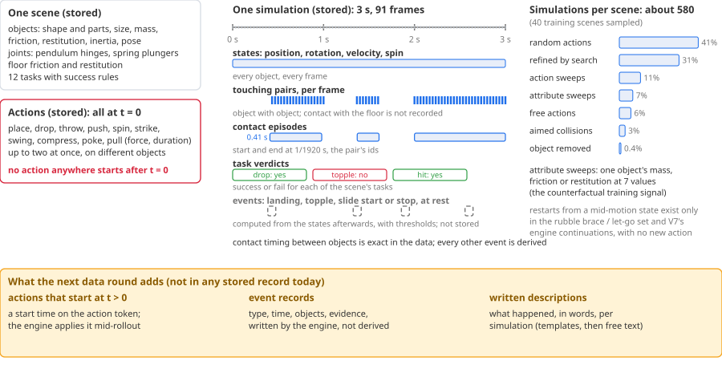
What one stored simulation contains: recorded exactly (blue), derived afterwards (dashed grey), and what the
next data round adds (amber).
Does the generator record what the heads need?
Checked against sim.py, the data README, the dataset-expansion plan (section 4, timestamped events) and the
motion pilot's event tags (pilot_events.py). What exists today is enough to train the masked flow model and a first event
head: contact start and end between objects are exact, and landings, topples, rest and container entry can be derived
with the pilot's thresholds (topple at 45 degrees, falling below 0.5 m/s downwards, rest below 0.05 m/s for 0.5 s).
Two gaps are in the generator itself, not in the plan: the peak impulse stored with each contact episode is read when
the contact is first found, before force builds, so it is zero in 79 percent of episodes and cannot serve as an
impact-strength target until the read is moved later in the episode; and contact with the floor is present in about
two thirds of sampled records although the README says none, so its coverage has to be audited per data source before
floor contacts are used as targets. The planned logging (verified floor contacts, impulses across the episode, contact
points and normals, generator-emitted events with an evidence contract, persisted horizons) covers the rest of what
the event head and the templates need. One thing to add to the plan: a start time on the action record, so that the
pilot's timed-intervention branches become a training set for actions inside a rollout and not only previews.
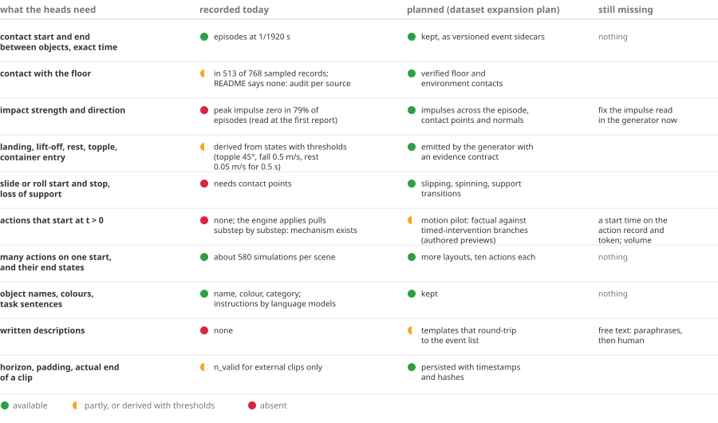
The generator against the heads' needs: green available, amber partly or derived with thresholds, red absent.
The training subset of the backward runs
The scaled study's generator stores several hundred simulations per training scene, far more than the backward questions
need from one scene. The first runs of objectives (8) and (9) use a fixed subset of the co-author's round-3 tensors: per scene
the no-op, every removal counterfactual, up to 14 attribute-sweep rollouts kept as whole sweeps (one action under seven
masses, frictions, restitutions or floor frictions, the counterfactual signal for the property question), up to 8 aimed
collisions, and random other rollouts up to 40. That gives 14,194 training rollouts over 357 scenes (attribute sweeps 4,557,
removals 2,088, random 1,994, action sweeps 1,696, refined 1,456, aimed 1,240, free 834, no-op 329; first actions: push 4,691,
throw 3,435, spin 2,121, drop 1,621, place 1,032, strike 570, pull 229, mechanisms 166, none 329) and 5,547 validation rollouts
over 140 scenes by the same rule. The scenes are the generator's families: the MOVi and Physion scenes rebuilt in PhysX with
our actions (2,470 rollouts), jenga (1,000), toss (840), mechanisms (800), dominoes (520), the Physion-style families, rooms,
playground, tabletop and the scanned-room twins. Every rollout has its 90 frames; the median scene has five movable
objects.
Pretraining on MOVi and Physion: what it trains, and what it cannot
The co-author's recipe for the one-pass and step-wise models was to train first on the public MOVi and Physion clips,
converted to our format, then on our simulations; on the one-pass models this lowered the validation error by 10 to 14
percent (section 4). The clips are 3,745 recordings, one per scene (MOVi-A 1,895, MOVi-B 952, Physion 898 across six
scenarios), 1.2 to 3 s long, in which every object starts with its recorded velocity and nothing is done to the scene: no
action, ever. MOVi carries real properties, masses from density and size and two materials (friction 0.4 or 0.8, restitution
0.3 or 0.7); the Physion records carry masses but placeholder friction and restitution, which the training treats as unknown.
The figure says, block by block, what such clips can train in each network and what they cannot touch: everything about the
scene, the motion, contacts and the properties learns from them; everything about actions sees only the no-action token, and
the cause question learns one answer, that nothing was done. Our simulations have to supply the rest: pushes, throws,
strikes and pulls, mechanisms, several actions at once, and sweeps of properties over continuous ranges. Before the
pretraining runs the clip tensor needs rebuilding with the two fields added in October (the start state after the action
and the physical action encoding); the converters and records are in place.
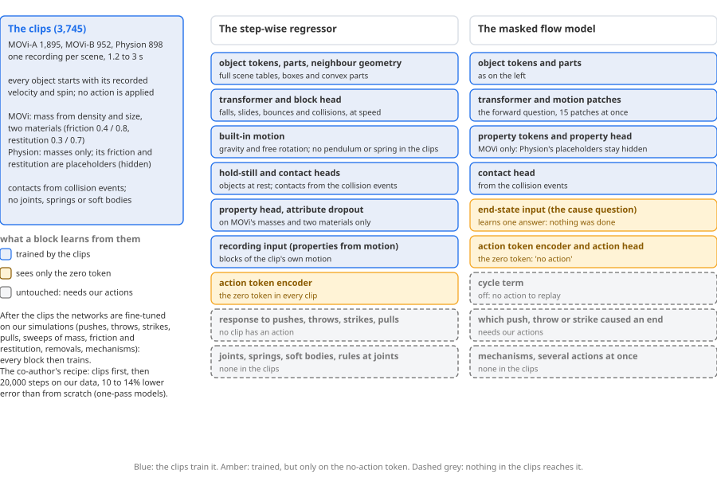
Pretraining on the clips: blue blocks learn from them, amber blocks see only the no-action token, dashed grey
blocks are reached by nothing in the clips and wait for our simulations.
15. Known issues
Bugs and blind spots found while reading the code and the results, with their state. Numbers affected by an open issue
should be checked before they are compared.
WM-K1openThe one-pass DDPM sampler divides by nearly zero at its first step. In the scaled study's one-pass
DDPM member, DDIM starts at \(t = 1\), where the cosine schedule gives \(\bar\alpha(1) \approx 2 \times 10^{-15}\) in
single precision, so the first estimate \(\hat Y_0 = \big(Y_t - \sqrt{1 - \bar\alpha}\, \hat\varepsilon\big) / \sqrt{\bar\alpha}\)
divides by about \(4 \times 10^{-8}\) and the clamp to \(\pm 6\) saturates it. Its reported failure (3.0 m average error,
2.4 m drift of objects that never move) is more likely this bug than a property of diffusion. The block diffusion added in
V5 clamps \(\bar\alpha \ge 10^{-4}\); the one-pass sampler still does not. Fix: the same clamp, then re-evaluate the
one-pass member.
A separate finding (Improved Results V5): block diffusion that predicts the noise fails when blocks are chained,
because the noise cannot be predicted at low noise levels and each block ends with leftover noise that the next block starts
from; predicting the clean block or v trains, but trails flow matching (0.748 and 0.804 m against 0.555 m).
WM-K2fixedNo gravity in free flight. Integrated motion started from zero acceleration and nothing taught
gravity. Fixed by built-in gravity (B2, in V4 and V5). The 9 to 10 m/s² error quoted here before came
from a faulty measure that counted objects resting on the floor as airborne (PhysX scored 9.8 on it); the corrected free-fall
error of V5 regression is 1.9 m/s², against 0.02 for PhysX.
WM-K3fixedThe position update was off by half an acceleration step. Positions were summed with end-of-frame
velocities, \(p_t = p_{t-1} + v_t \Delta t\), which misplaces every frame by \(\tfrac12 a \Delta t^2\) under a constant
acceleration, 5.5 mm per frame under gravity. Fixed with the built-in motion of the scaled study (V4): the trapezoid rule
\(p_t = p_{t-1} + \tfrac{\Delta t}{2}(v_{t-1} + v_t)\), exact for constant acceleration and the rule the benchmark's own
motion screen uses.
WM-K4openOrientation and spin do not have to agree. Orientation is predicted as a change from the post-action pose
and spin separately, so no rotation of the object need produce the predicted orientations. Fix: integrate the spin
(B1).
Tested in Improved Results V4: orientation integrated from the predicted spin lowers regression's position error a little but gives the worst tilt; velocity and spin taken from the predicted motion lower the tilt error but cost 11 percent position error. Neither was kept; corners as outputs is the rotation change in use.
WM-K5openA bounce cannot happen inside a frame. The model outputs a smooth acceleration per frame, but a bounce is a
velocity jump within one; at 30 frames per second a cone at 4.5 m/s moves 15 cm between frames, more than a wall's thickness,
so a smooth path passes through or averages the two outcomes. F1 to F6 address parts of it
(section 12); ending a block at the predicted time of impact is a further option to
discuss.
Still so in V5: every model pushes the traffic cone into the wall in the clips. The Failure analysis shows that with about 1,900 pushes of that one scene a plain model stops the cone at the wall, so the moment of contact can be learned from data.
WM-K6fixedThe first overlap rule could not see thin obstacles. Iteration 1 checked axis-aligned boxes every third
frame, 45 cm apart at 4.5 m/s, and treated fixed objects stored after the moving ones (most walls, poles and ramps) as
points. The bug was fixed on 15 October and iteration 3 checks pieces every frame (F3); Improved Results
V1's overlap numbers undercount until they are recomputed.
WM-K7fixedThe cause rule reads the answer. Iteration 1's rule against motion before contact uses the true moment each
object starts to move, so it cannot act at inference or on a scene without a simulation. Fix: the causal cone over predicted
contacts (A2).
Addressed in Improved Results V4 (stage 2): the first-law gate decides from the predicted geometry and needs no truth (A2); on the four-scene study it was neutral.
WM-K8openNo measure catches missing motion. Every violation measure punishes moving too much (overlap, bystanders,
energy), none moving too little, so a timid model that barely moves scores well on all of them. Report, for objects that
really move, the ratio of predicted to true path length; a timid model has \(\rho \lt 1\):
\[ \rho = \frac{1}{|\mathcal{M}|} \sum_{i \in \mathcal{M}} \frac{\sum_t \lVert \hat p^i_{t+1} - \hat p^i_t \rVert}{\sum_t \lVert p^i_{t+1} - p^i_t \rVert} \]
The Failure analysis now counts a related case: a quarter of the objects that should be knocked away are barely moved. A standard measure is still missing.
WM-K9openSingle-sample distance errors favour regression. A regressor predicts the average of the possible
futures, a generative member draws one of them and is penalised for it, so ADE ranks the two unfairly. Compare on verdict
agreement \(\alpha\), and score generative members with several samples (best of \(k\), or the energy score
\(\mathbb{E}\lVert X - y \rVert - \tfrac12 \mathbb{E}\lVert X - X' \rVert\)).
In part: verdict agreement and, in V5, reviewers judging predicted motion now accompany ADE; generative members are still scored with one sample.
WM-K10fixedEnergy formula on this page. B3 used the inertia in the object's frame with the spin in world axes; it now
rotates the inertia into world axes.
WM-K11openErrors compound over chained blocks: the main failure. Started from the true state, each 0.2 s block of V5
regression is accurate (about 2 cm in free motion, 6 cm at a collision); fed back block after block, the error grows to about
1.5 m by 3 s, and with the true speed restored at every block it stays at 18 cm. Speed is what is imprecise (0.1 to 0.5 m/s
per block), and the loss counts speed errors about four times less than position. In a linear picture, with
\(\delta^p_b, \delta^v_b\) the position and speed errors a block adds and \(\tau = 0.2\) s, an early speed error counts once
for every block that follows:
\[ e^p_{b+1} = e^p_b + \tau\, e^v_b + \delta^p_b, \qquad e^v_{b+1} = e^v_b + \delta^v_b \qquad \Rightarrow \qquad
e^p_B = \sum_{b \lt B} \delta^p_b + \tau \sum_{b \lt B} (B - 1 - b)\, \delta^v_b \]
From the Failure analysis: chained-block training and DAgger did not help; weighting speed errors ten times
more, and training eight times longer on one scene, are being tested. A design that stops the drift at the next key event,
the coarse pass first, is proposed in section 8 (L1 to L4).
Resolved since first noted: the Scaled results planning tables showed 0 percent in every cell before their
runs finished (now filled in), and models were chosen and reported on the same validation scenes (test results are now on
held-out test tasks).
16. Borrowed from tracking, detection and forecasting (ideas to discuss)
Predicting a trajectory is regression of 3D positions, orientations and velocities over time, close to what point
tracking, object detection and trajectory forecasting optimise in pixels or on maps. Three of their tools are already in
the plan: the corner loss of 6D pose estimation (F5) and collision guidance from MotionDiffuser and
CTG (F6), both implemented in the scaled study's iteration 3, and winner-takes-all hypotheses from
trajectory forecasting (E5, not implemented). The items below are the others worth trying; none is
implemented.
Which to back first. Iterations 3 to 5 and the failure analysis have settled most of it. Against
passing through, collision guidance (F6) beats every training term and needs no retraining; for rotation, corners as
outputs (V4) is the clear winner; free flight is fixed by built-in gravity. The main failure is now errors compounding over
chained blocks (K11), where training on the model's own predictions (J3, and DAgger) did not help.
Two ideas here target it directly: iterative refinement of the whole trajectory (J1, the idea of TAPIR and its relatives),
which corrects all blocks together with the geometry read at the predicted positions, and a memory token per object across
blocks (J2), which passes on more than the 15-number state. Winner-takes-all (E5) targets forks and stays useful for the
regressor.
WM-J1ideaIterative refinement with geometry recomputed at the current estimate. Point trackers initialise a whole
track and refine it several times with features read at the current estimate (TAPIR, PIPs, CoTracker; RAFT for optical
flow; iterative box refinement in Deformable DETR). Here: start from the one-shot or step-wise prediction, recompute gaps,
normals, approach speeds and times to impact (F2) along the predicted trajectory, at sub-steps, predict a correction, and
train every iterate with RAFT's sequence loss:
\[ Y^{(k+1)} = Y^{(k)} + \Delta_\theta\big(Y^{(k)},\ \phi(Y^{(k)}),\ G,\ a\big), \quad k = 0, \dots, K - 1, \qquad
\mathcal{L}_{\text{seq}} = \sum_{k=1}^{K} \gamma^{K-k}\, \big\lVert Y^{(k)} - Y \big\rVert_w^2, \ \ \gamma = 0.8 \]
WM-J2ideaA memory token per object across blocks. Step-wise blocks (F1) pass on only the decoded 15-number state,
so contact history and whatever else the network knew is lost at every block boundary. Trackers carry one query per object
from frame to frame (TrackFormer, MOTR); carry each object's latent \(h^i\) as well:
\[ \big(\hat s_{6b+1\,:\,6b+6},\ h_{b+1}\big) = f_\theta\big(\hat s_{6b},\ h_b,\ G,\ a_b\big) \]
WM-J3tried, not keptTrain on its own predictions. At test time a block starts from the model's own, imperfect end state; in
training, from the true one. The pushforward trick of neural PDE solvers (Brandstetter et al. 2022), like scheduled sampling
in sequence models, starts the next block from the model's own prediction without back-propagating through it. Gaussian
noise on the start state did not help (F1), which suggests the model's own errors are not Gaussian:
\[ \mathcal{L}_{\text{pf}} = \ell\Big( f_\theta\big(\mathrm{sg}[\hat s_{6b+6}],\ G\big),\ s_{6b+7\,:\,6b+12} \Big), \qquad
\hat s_{6b+6} \text{ from } f_\theta(s_{6b}, G, a_b) \]
Tried: chained-block training (Improved Results V4, stage 2) made every measure worse (position error up 26 percent), and DAgger, which re-simulates 0.2 s from the model's drifted states with PhysX (Failure analysis), was slightly worse than training as long on the original data.
WM-J4first versionSymmetries: rotations about the vertical, shifts along the floor. The physics of a scene is unchanged when
the whole scene and the action are rotated about the direction of gravity or shifted horizontally. Forecasting models build
this in with agent-centred frames (HiVT, QCNet), detectors with augmentation. Train with random such transforms \(T\), or
express each object's motion in a frame aligned with gravity and the action; at test time, average over a few rotations, a
cheap ensemble whose spread feeds E1:
\[ \Phi(TG,\ Ta) = T\,\Phi(G, a) \ \ \text{for } T \in \mathrm{SE}(2) \text{ in the floor plane}, \qquad
\hat Y_{\text{tta}} = \frac{1}{K} \sum_{k=1}^{K} T_k^{-1} f_\theta\big(T_k G,\ T_k a\big) \]
The training half exists from the start: the scaled study trains with random rotations about the vertical and shifts along the floor. Averaging over rotations at test time is not done.
WM-J5tried, not keptRotation losses that respect geometry. Measure orientation error as the angle of the rotation between
prediction and truth (or its smooth surrogate \(1 - \cos d\)) rather than a squared difference of matrix entries, and, as in
pose estimation of symmetric objects (PoseCNN's ADD-S), ignore rotations about an object's symmetry axes in the orientation
loss while still supervising its spin (\(\mathcal{S}_i\) is the symmetry group of object \(i\)'s shape):
\[ d(\hat R, R) = \arccos \frac{\mathrm{tr}(\hat R^\top R) - 1}{2}, \qquad \mathcal{L}_{\text{rot}} = \min_{S \in \mathcal{S}_i} d\big(\hat R\, S,\ R\big) \]
Tried in Improved Results V4: an angle loss gives the lowest tilt error (16.9 degrees) but at weight 20 it drowns the position terms; the symmetric-axis loss behaves the same. Corners as outputs works better and is in use.
WM-J6ideaRobust, uncertainty-aware regression. Errors around impacts are heavy-tailed, so under a squared loss a
few missed bounces dominate training. Use the Smooth L1 loss of detection (Fast R-CNN) or the Laplace likelihood of trajectory
forecasters (HiVT, QCNet), whose scale \(b_\theta\) doubles as a predicted spread (E2):
\[ \mathcal{L}_{\text{lap}} = \frac{\lvert y - \mu_\theta \rvert}{b_\theta} + \log 2 b_\theta \]
WM-J7ideaRare events count more. Contacts, bounces and topples occupy a few percent of the frames. Train the
contact head with the focal loss of dense detection (Lin et al. 2017) and over-sample training blocks that contain an
impact, as hard-example mining does (OHEM); F4's double weight on new contacts is the simplest version:
\[ \mathrm{FL}(p_t) = -(1 - p_t)^{\gamma} \log p_t \]
Related (Improved Results V4): triple weight on blocks where an object tips by more than 10 degrees, in a combination that did not beat corners as outputs.
WM-J8ideaA ballistic reference, and projection at test time. Trackers predict with a constant-velocity Kalman model
(SORT); its physical version, constant velocity plus gravity until the first contact, is the simplest reference to report
next to "nothing moves". After a prediction, a few iterations of position-based dynamics (Müller et al. 2007) move
overlapping objects apart in proportion to their inverse masses, and velocities are recomputed from the corrected positions:
hard constraints at test time, complementary to guidance (F6):
\[ \hat p^i_t \leftarrow \hat p^i_t - \frac{w_i}{w_i + w_j}\, \big(d_{ij}\big)^{+} n_{ij}, \qquad
\hat p^j_t \leftarrow \hat p^j_t + \frac{w_j}{w_i + w_j}\, \big(d_{ij}\big)^{+} n_{ij}, \qquad w_i = 1 / m_i \]
A broader physics dataset, with timed explanations
How do we get more useful motion, richer environments and explanations grounded in what actually happened?
Expand independent physical layouts, record events with their evidence, and render complete scenes. Longer clips
earn their cost when they contain continuing motion or later interactions.
Proposal updated 26 October 2026. A read-only audit of eight shared-data cohorts found
1,179,700 stored rollouts in 3,974 scenes with rollout files; 1,113,039 pass the recorded physics screens.
These are state records, not available training videos or a new scientific qualification. The three indoor
appearance previews were approved on 20 October; three bounded composite-motion previews are rendered and
verified. Full compact Physion dynamics and MOVi-A/B retention is complete. Expansion at scale remains a proposal.
Release targets and what counts
The 31 October proposal is 100,000-200,000 new accepted records, with 250,000 a conditional stretch,
six GPUs at peak and 1,000-2,000 furnished layouts. Start with 100M-300M models; larger capacity needs
learning-curve evidence. The million-record stages below are longer-term targets, not October commitments.
October budget and later scaling stages
Stage
Root physical layouts
Qualified trajectory records
Gate
31 October proposal
4,000-8,000
100,000-200,000
Qualified subset; realistic layouts, events and matched branches
Capability pilot
1,000
25,000
Qualified solvers, events, replay and branch controls
Learning curves
40,000
1,000,000
100M/300M models, measured data and compute scaling
Count physical layouts, world conditions, complete trajectories, intervention suffixes and rendered views
separately. Each proposed 25-record bundle has 15 full simulations and 10 suffix branches. A new camera,
texture, light or property-only sweep remains a variant of its parent layout. PhysInOne's about two million
videos come from 153,810 dynamic scenes and 13 views each; our records are a different unit. Its 71 phenomena
span optics and magnetism too. The new 50-group target maps its 61 mechanical/fluid phenomena; a mapping
does not establish implemented or qualified coverage. The targets are planning
assumptions; capacity gains must be measured before scaling.
Use an 80/10/10 split of root layouts, grouping every descendant with its parent. Include separate tests
for held-out assets, environments and interaction families. Preserve existing frozen tests, rejected builds
and failed actions with explicit denominators; physically invalid rollouts do not satisfy the qualified-record target.
Release replayable states, events and licensed scene/assets, with RGB, depth, motion masks and flow generated locally on demand.
Work to do, in order
Current order (26 October 2026): implement timed-action/branch/replay contracts and default events, qualify
each new solver, then measure a small capability pilot in realistic environments before training-scale generation.
Indoor appearance review and compact source retention are complete; generation at scale remains deferred.
DATA-4reviewedThree furnished indoor appearance previews reviewed. The user approved original textured furniture,
supported clutter, lighting and camera views in living, dining and bedroom layouts. These use observed
ARKitScenes object groups and visit-balanced size/distance descriptors; three samples do not establish
a ScanNet distribution match. The larger
proposal in H2 remains deferred: 20 dressed layouts, broader room types and
object-count bands of 8-15, 16-30 and 31-50. Appearance-only replay needs clearance/visibility checks;
new interacting furniture needs fresh simulation and calibrated camera/object metadata.
DATA-7to doExpand coupled motion and track distinct scenes. A three-case builder pilot is ready for review:
ball/block/table/open box, chair tipping with a supported ball, and toppling books transferring motion
to a ball. All three six-second physical probes pass their declared screens; the book-chain ball remains
on the table, a retained ordinary outcome failure. Existing two-action/composite templates do
not establish this coverage. Track structural layout, physical condition, action program and rendered
view separately. Convex pieces sharing one pose remain rigid; flexible motion needs node/mesh state,
material constraints and explicit force fields before becoming faithful training supervision.
DATA-1to doBackfill timed events and verify explanations. Implement D1 and
D3 using existing states and contact episodes: contacts, landing, rest, tipping,
region entry and task outcomes. Write versioned sidecars with source hashes, measured evidence,
uncertainty and censored endpoints. Validate on 1,000 existing trajectories. The explanation describes
the model's own predicted events; comparison with PhysX supplies missed, extra or late events
(D4). A learned event head (D2) can follow.
DATA-2to doRequire event evidence for every new simulation. Incomplete event records block release completion.
Save actual simulation end, valid-frame masks,
verified environment contacts, contact points/normals, episode impulses and applied force intervals.
Existing records do contain floor contacts, with coverage to audit by source. Their stored peak impulses
are unreliable as impact-strength labels. Distinguish measured anomalies, inferred warnings and unavailable evidence.
DATA-3to doChoose useful 3, 6 and 10 second horizons by family. In a diagnostic sample of 768
action-bearing rollouts from 24 scenes, 482 still had motion at 3 s, while 236 had unchanged poses for
the final second; these counts include physics-screen failures and are not dataset-wide estimates.
Compare 3/6 s prefixes of the pilot's fresh 10 s simulations. Measure late events, path length, rotation
and time to rest. Account for scheduled forces and stored spring energy before early stopping;
repeated final frames do not extend physical coverage.
DATA-5to doQualify tops and wheels, then drag and wind. Verify gyroscopic settings, inertia, contact
geometry and timestep convergence for precession, wobble and slip-to-roll transitions. Add explicit
air-relative forces with documented density, area and drag coefficients; damping alone is not a qualified
air-resistance model. Update energy and free-flight checks for external work. Leaves need orientation-dependent
forces and torques; cloth, hair and deformable tires require separate solver and state-contract qualification.
DATA-6to doProvide post-hoc RGB, depth, masks and flow. Release full replay states, cameras, stable IDs,
deformable topology, materials and asset references. Demonstrate metric depth, object motion masks, optical
flow in pixels per frame and world scene flow in meters per frame, with occlusion/validity masks. Replay
saved states; separate resimulation from rendering. Dense videos/modalities are not part of the final training
payload. Every new scene still needs realistic materials, lighting, furniture and supported clutter.
DATA-8to doMake counterfactual and intervention coverage uniform. Main training has explicit children for
only 7,161 of 291,328 original action rows. Its 27,454 property branches include 2,573 nominal identity edits;
MOVi-derived training families have no property branches. Dense/rubble cohorts have no explicit parent links.
Give each of four factual anchors two world-change branches and two observed-prefix interventions. Add five
recovery, uncertainty/boundary and long-motion records per root. Inverse/endpoint masks and event QA reuse
these traces; do not count them as new physics. Upgrade fixed action/object limits and the GPU-resident data
loader before million-record training.
DATA-9to doClose solver and layout gaps before the October freeze. The starter has 34 rigid/constraint
groups and four experimental native surface/particle probes. Hair rods, fracture, plasticity and several
liquid regimes still need implementation and qualification. Cloth/free-leaf repeat variation and incomplete
native contact events block causal release qualification. ScanNet++ extraction currently uses 262 of 856
training annotations; refit room-conditioned scale/distance/co-occurrence statistics after download coverage
is audited. Texture, light and camera variants do not count as new furnished layouts.
Post-training an open model with the simulator as its teacher
Why post-train a language model?
Language models are the natural interface for a request to a simulator: "toss the ball into the box", "make the cart
travel at least a metre", "what if the block were lighter?". A model that also judges physics well could plan actions for a
simulator or a robot and say what it expects to happen. On the benchmark's launch tasks, where one initial velocity must make
something happen in the simulation, GPT-5.4 meets the goal in about nine tasks out of ten. Open models, the ones anyone can
run, inspect and fine-tune, do much worse: the 30B model passes about a third of the launches and the 7B model almost none.
Post-training asks whether that gap can be closed with the simulator as the teacher instead of human labels. The model
proposes several answers to a task, each answer is played out in PhysX and judged, and small adapters are trained toward the
answers that worked while the model's own weights stay frozen. The feedback is exact and unlimited; its cost is time, about
50 seconds per simulated launch, which a fast world model could cut to milliseconds. Every scene, answer and score below is a
real record from the benchmark or from Dataset V2.
Rewardthe simulator's verdict, no human labels
About 1%of the weights trained (LoRA adapters)
Qwen 7B and 8Bthe open models being taught
Held-out tasksjudged by PhysX at the end
1. Abstract
Three kinds of task, all judged by deterministic measurements on PhysX rollouts. The benchmark's launch tasks
ask for one initial velocity of one object so that something happens in the simulation ("toss the red ball over the
barrier into the box"). Dataset V2's planner tasks ask for the parameters of a push, a release or a force so that
a measured outcome holds. Its reasoner questions ask what a changed world would do. On the launches GPT-5.4 passes
most tasks, the 30B open model about a third, the 7B open models almost none.
Post-training turns those verdicts into a teacher. The model writes several answers to the same prompt, each answer is
scored (a full simulation for every launch; for Dataset V2 a lookup against measurements already recorded), and the model
is pushed toward the answers that scored better than their siblings (GRPO), or toward the better answer of a pair (DPO,
the cheaper baseline). The simulator is the final judge, on held-out tasks the model never trained on.
2. Post-training in symbols
The notation of the World model tab carries over: \(G\) is the scene graph, \(a\) an action, \(\Phi\) the simulator and
\(V\) a task's verdict. What is new is the language model as a policy.
\(x\)
the prompt: instruction, two pictures, the scene as data, the rules of the checks, the answer format
LoRA: every weight matrix \(W_0\) stays frozen and only the low-rank \(B A\) (rank 32) is trained, about 1 percent of the weights
\(\pi_{\text{ref}}\)
the model before training, the anchor for DPO
\(\psi(y)\)
the parser: the action \(a\) the answer states (a launch velocity, or the parameters of a program), or \(\bot\) when it breaks the answer contract
\(r(x, y)\)
the reward, always computed by code, never by a person or another model
The verified reward
For a launch the reward is built from the simulator's own verdict, with partial credit so that a group of failed answers
can still be ranked (\(K\) checks, \(\mathbb{1}[\cdot]\) is 1 when true):
Section 9 gives the two rewards of Dataset V2: a yes-or-no goal verdict for the planner and a four-part score against the
changed run's record for the reasoner.
\(y^\star\) is the verified reference answer. The control arm: it teaches one way of answering and needs a reference
for every task.
DPO: prefer the better of two own answers
\[ \mathcal{L}_{\text{DPO}}(\theta) = -\,\mathbb{E}_{(x, y_w, y_l)} \log \sigma\!\Big( \beta \log \frac{\pi_\theta(y_w \mid x)}{\pi_{\text{ref}}(y_w \mid x)} - \beta \log \frac{\pi_\theta(y_l \mid x)}{\pi_{\text{ref}}(y_l \mid x)} \Big) \]
For each prompt the start model writes several answers; the best and the worst become a pair \((y_w, y_l)\) when their
rewards differ by at least 0.25. \(\beta = 0.1\). Offline: the simulator scores the answers once, before training.
For every prompt the current model writes \(G\) answers \(y_1, \dots, y_G\), each is scored, and each answer's advantage is
its reward relative to its own group. \(\rho_{g,l}\) is the probability ratio of token \(l\) under the new and the sampling
policy. In our run \(G = 8\), two prompts per update, 100 updates, \(\beta = 0\) and one gradient step per batch, so
\(\rho = 1\), the clip never binds and the update is
A group whose answers all score the same carries no signal (\(\hat A_g = 0\)); that was 32 percent of the groups on
average. Online: every sampled launch is simulated during training.
3. Training examples from the benchmark
Three real launch tasks from easy to hard. Each one shows the task, then how the reference answer and the answers of three
models fare in the simulator, then the reward each answer would receive in training. Pick an example or a step; the
animation also plays through all of them.
4. GRPO: learning from a group of its own answers
For each prompt the model writes a group of answers; each is scored, and the update favours the answers that beat their
group's average. Below, thirteen launches the simulator has judged for one launch task: the reference, three models'
answers and random launches from the difficulty measurement.
5. DPO: learning from a better and a worse answer
The offline baseline: answers are sampled and scored once, then the model is trained to prefer the better answer of each
pair. No simulator runs during training.
6. What is trained, and where the simulator sits
The 7.6 billion weights of the language model stay frozen. LoRA adds two small matrices beside every linear layer and
trains only those, about one percent of the model, which is what lets a ten-thousand-token example fit one graphics card.
Blue: the trained adapters. Grey: frozen weights and the training methods. Green: the reward. Red: the simulator.
7. The first experiment
Launches of every difficulty from the benchmark, split into training tasks and held-out test tasks. Difficulty is
measured by guessing: a task is easy when at least half of random launches pass, hard when fewer than 15 percent do. The
untrained 7B model, GRPO and DPO are each judged by the simulator on the test tasks, next to the larger models below.
The trained models' numbers are in the Results tab. The same run also covered the benchmark's static scene
edits, a task type now handled by code rather than by a trained model; those numbers stay in the Results tab and are not part
of this page.
8. Next: a world model as the judge
GRPO needs a verdict for every answer it samples, and today each launch verdict is a PhysX simulation. The proposal is to
ask the world model instead, hosted on the same machine as the language model, so that a whole group of answers is judged
in one batched pass:
A generative world model gives \(S\) possible futures, so \(\hat p\) is a probability of success rather than a yes or no
(\(S = 1\) for a deterministic one). DPO needs the same verdicts, only once and offline.
Judging launches
PhysX
World model
One verdict
35 s median, 56 s for one in ten, up to 409 s (one simulator process)
1.6 ms (regression) to 52 ms (flow matching), batched on one GPU
Our GRPO run: 747 launches over 100 updates
7.8 hours of four simulator processes, in 8.0 hours of training
about 1 to 40 s in total
A larger run: 64 prompts × 8 answers per update, 1,000 updates
about 5,000 simulator-hours
about 15 minutes (regression) to 7.4 hours (flow matching)
Where it runs
separate simulator jobs on RTX graphics cards, scheduled next to the trainer
on the language model's own node
PhysX times are those of our GRPO run (the benchmark's rollout with contact records, 2 s of motion). World-model
times were measured on the 1.3-million-weight toy model with 19 movable objects on one RTX A5000; the scaled study's
23-million-weight predictor costs more per pass, still far below a simulation.
What accuracy is needed
Not a small distance error but the same verdicts as PhysX on the answers the policy actually writes. Two numbers decide:
the agreement \(\alpha\) and the false-success rate \(\mathrm{FS}\), measured on the policy's own samples
\(y \sim \pi_\theta\):
\[ \alpha = \Pr_{y \sim \pi_\theta}\big[\hat V = V\big], \qquad \mathrm{FS} = \Pr_{y \sim \pi_\theta}\big[\hat V = 1 \mid V = 0\big] \]
Random mistakes are tolerable. If every verdict were flipped independently with probability \(\eta \lt 1/2\), the expected
reward would be \(\mathbb{E}[\hat r] = (1 - 2\eta)\, \mathbb{E}[r] + \eta\): answers keep their order and GRPO's signal only
shrinks. Systematic false successes are not tolerable: training searches for answers the world model wrongly accepts and
makes them more likely (model exploitation).
Safeguards
Audit. PhysX re-checks a share \(q\) of the answers in every update, in particular each group's best
answer, the one GRPO reinforces most; audited answers keep PhysX's reward.
Doubt goes to PhysX. When the world model's samples disagree about the verdict
(\(0 \lt \hat p \lt 1\)), that answer is simulated.
The judge keeps learning. Every audited answer becomes a new training rollout for the world model, on
exactly the answers the policy now writes.
The final word stays with PhysX: trained models are judged by the simulator on held-out tasks, as now.
Where it stands. Not yet: in the end-to-end study the best world model recognizes 24 percent of real
successes, and the toy models' predicted trajectories pass none of the benchmark's checks. The scaled study's best model
(V5) gives the same verdict as PhysX on about 90 percent of its stored test simulations, but on the reviewer study's
balanced items (two real successes and two failures per task) its predicted motion lets reviewers, and the rule checks, agree
with PhysX only 61 to 68 percent of the time, and only 29 to 43 percent of real successes are found
(Improved Results V5): a judge built on it today would under-reward rather than
over-reward. Agreement and false successes on a policy's own answers are not measured yet. The switch is gated on \(\alpha\) and \(\mathrm{FS}\) measured on policy samples.
Three places to use it. The benchmark's launch tasks, as above, the Dataset V2 planner of section 9, and the
scaled study's action planner, for which GRPO with the learned simulator as the reward and PhysX checks on a quarter of the samples (\(q = 1/4\)) waits for a
decision. Two world-model items decide how far such a judge can be trusted: actions written by language models in its
training data (WM-H1; the policy's actions are what it must judge) and its speed at planning batch
sizes (WM-H3).
9. Two more models, trained on Dataset V2: a planner and a reasoner
The sections above train one model to choose a launch. Dataset V2 (46 mechanics
families in scanned rooms, every action simulated together with its what-if branches) lets us train the two language-model
parts of the loop the project is heading for. A planner chooses the parameters of an action for a wanted
outcome. A reasoner says what a changed world would do. The simulator sits between them,
PhysX today and the world model once it judges like PhysX (section 8). A verifier written in code closes
the loop: it checks the planner's outcome against the goal and the reasoner's answer against the changed run's record, and
a model's opinion never enters it.
The loop. Blue boxes are trained (LoRA adapters on a frozen Qwen); the red box is the simulator; the green box is
code. Every arrow carries data that exists in the dataset's records or that the simulator produces; no arrow carries a
model's judgment of another model.
Where the training pairs come from
Dataset V2 records every action as a bundle: the factual run, and the same program run again in a changed world (a mass or
friction changed, another material, another shape, an object removed, the actuator's command changed while it acts, an
impulse or a thrust cut later). Each root has three such action programs on the same scene. The two models read the same
tree in two directions.
One root of the dataset. The reasoner reads across a row: the factual run and one of its what-ifs make one example,
and the what-if's own record holds the answer. The planner reads down the column of factual runs: the three programs of
one scene are judged against one goal, and the recorded measurement says which of them succeed.
The planner: an action for a wanted outcome
The prompt holds the initial scene graph (every body and constraint with its collision shape, size, mass, friction,
restitution and pose, in tables with shared shapes so the geometry stays compact), the rig's baseline program (a piston
force window, a grasp and release, a declared velocity, a force field), the allowed parameters with their exact bounds, and
the required outcome in words, as the simulator will measure it. The answer is one JSON object with four fields: which
dimension to change and its value, a lateral offset of the push and a yaw. The dimensions are the dataset's own action
vocabulary: the drive (×0.7 to ×1.4 of the recorded program), a release height (±0.35 m) or angle (±20°), a ramp offset
(±0.35 m), a vertical tug (±0.4 m/s) or a force field (×0.7 to ×1.4); the offset (±0.25 of the payload's half width) and the
yaw (±8°) exist only on pushes that support them. An answer is parsed strictly (exactly four fields, finite numbers inside
the bounds), transcribed into the simulator's input, checked for a consistent start (inside the room's reserved zone, no
overlap, a consistent rig) and then simulated; nothing in an answer is ever repaired.
Below, two real roots of the dataset, each under two goals: the task as the model sees it, the three programs the dataset
recorded for the scene, their rollouts and measurements, the verifier's verdicts and what the planner is trained on.
\(m_g\) is one of eight quantities the dataset already measures on every rollout (final displacement, toppled count,
containment, maximum height, maximum rotation, oscillation count, rebound height, time to rest) and \(I_g\) the required
interval. Per family and quantity, the intervals come from the quartiles of what the training roots' own programs
achieved: at least the 75th percentile, at most the 25th, or between the two; validation and test roots never set a
threshold, and a goal a scene cannot meet by construction is not asked. A missing or censored measurement gives no verdict
rather than a failure; a physically invalid rollout is excluded rather than counted as a failure.
Training: copy successes, then prefer them over failures
\[ \mathcal{L}_{\text{SFT}} = -\,\mathbb{E}_{V_g(a) = 1}\, \log \pi_\theta(a \mid G, g), \qquad
\mathcal{L}_{\text{DPO}} \text{ of section 2 on pairs } (a_w, a_l) \text{ with } V_g(a_w) = 1,\ V_g(a_l) = 0,\ \beta = 0.1 \]
Both members of a pair act on the same scene toward the same goal and both were simulated and valid: a valid rollout that
misses the goal is the negative, an invalid or missing rollout is not. DPO starts from the SFT policy, which is also its
reference. Neither stage runs a simulation. A trained planner is judged by committing one greedy answer per held-out task
(held-out rooms, seeds and whole families) and simulating it in PhysX, next to three controls: the unchanged program,
random parameters inside the bounds, and the recorded programs rounded to three decimals.
Planned: the learned simulator as the environment, with retries
\[ R = B\, \mathbb{1}[\text{goal met within } K \text{ attempts}] - c\, n_{\text{attempts}}, \qquad B \gt cK \]
Every attempt restarts from the same scene; the planner sees its earlier actions with their predicted measurements and
the shortfall ("0.34 m of the required 0.50 m") and proposes again. A GRPO-style update over whole episodes rewards reaching
the goal in fewer queries; only the planner's own tokens are credited, the predictions are conditioning. PhysX audits a
sample of the policy's actions, as in section 8: a gap between the two simulators is a result, not a reason to swap the
reward.
Why outcome-conditioned actions. A planner is the inverse of the simulator: given the outcome, find the
action. Training it on recorded successes needs no new simulation, and three simulated programs per scene give successes
and failures of the same scene and goal, which are exactly the pairs DPO needs. Keeping the answer to a few parameters of a
known mechanism makes every answer verifiable and comparable with the benchmark's launches. The learned simulator enters
only as the environment of the last stage, where its speed matters and PhysX keeps the final word.
The reasoner: counterfactual questions with measured answers
The prompt holds the scene (every movable object with its shape, size, mass, friction, restitution and pose, the joints
and the furniture within 3 m), the program as applied, the observed run as timed facts (the push begins, two bodies touch,
a body comes to rest, with the end state, first contacts and final positions), then the change in words together with
every exact difference between the two scene files, and the questions. The questions are fixed by the observed run and the
declared change alone: every quantity measured on the observed run is asked again for the changed run, and a comparison
(more, less, about the same, not measurable) for every comparable kind. The answer is one JSON object with four parts:
the comparisons, the quantities (a number, or null when the changed clip cannot measure it), the outcome (which reported
objects move, which candidates topple, the first contacts with their times, the final positions) and one sentence of
summary that carries no weight. Its target is read from the what-if record, so the label is exact and costs nothing
beyond the dataset.
Below, the same two roots: a friction change that turns a short push into a slide across the room, and a restitution
change that changes almost nothing. Both answers are right, and the verifier knows why.
The verified reward of an answer
\[ r(x, y) = 0.05\, r_{\text{format}} + 0.35\, r_{\text{compare}} + 0.35\, r_{\text{quantity}} + 0.25\, r_{\text{outcome}} \]
Each part is in \([0, 1]\): the share of required fields present and well formed; the share of comparisons that match;
the share of quantities within tolerance (counts exactly, lengths within 5 cm or 10 percent, times within 0.15 s, a null
only where the record has none); and for the outcome the mean of the moved-set and toppled-set overlaps, the first-contact
agreement in pairs, order and time, and the share of final positions within 10 cm. A part that breaks its contract scores
0 rather than disappearing from the mean; an unfinished thinking block or no JSON scores 0 overall. The same function is
the SFT check, the GRPO reward and the held-out metric.
Training
\[ \mathcal{L}_{\text{SFT}} = -\,\mathbb{E}\, \log \pi_\theta(y^\star \mid x), \qquad \text{then GRPO of section 2 with } r(x, y):\ G = 8,\ \epsilon = 0.2,\ \beta = 0.02 \]
\(y^\star\) is the measured answer. GRPO then samples eight answers per prompt at temperature 1, scores each by the
lookup above, normalises the token-level loss over the completion tokens of the batch (the DAPO form, so long answers are
not favoured) and keeps a small KL term toward the supervised start; answers are capped at 1,536 tokens and prompts at
10,240. No simulator runs during training. Two baselines are scored on every evaluation row and are the numbers to beat:
the no-change answer (copy the observed run, say "about the same" everywhere) and the family prior (the most common
comparison and the median quantity per family and question kind in the training split).
Why counterfactual pairs. A what-if asks for the mechanism, not for a memory of the observed run: the
observed run is in the prompt, so copying it is the obvious shortcut, and the no-change baseline measures exactly how far
that shortcut gets. The answer is discrete, the natural output of a language model, and it is the kind of question the
world model's input contract cannot encode (a changed material, a removed object, a command that changes mid-action). On
numeric what-ifs the world model's re-run will be the stronger instrument; the reasoner's value is language and the
comparison, and that comparison is part of the evaluation.
What has been measured so far
Every number in this tab is decided by the simulator, not by a person or by a model acting as judge: how well GPT-5.4 and an
open model edit and launch objects in simulated rooms, how the first small world models compare with PhysX, and what a 7B open
model gains from post-training with simulator rewards. The end-to-end and scaled studies have their own tabs, and bugs that
affect reported numbers are listed under known issues.
Can a language model edit a physical scene?
GPT-5.4 and Qwen3-VL-30B Thinking each get a simulated room (two renders and the list of objects with their
sizes, masses and friction) and an instruction, and answer once: new poses for a static edit, or a launch velocity for a dynamic
one. The PhysX simulator applies the answer exactly as given and measures whether the instruction was met.
Full results page with the animated pipeline and more examples.
1. Results
How hard is a task? We draw random answers from each task's allowed range, run them through the same
checks and count the passes: under 15 percent passing is hard, 50 percent or more is easy.
2. Four examples, reference next to both models
Launch tasks play the two simulated seconds side by side (hover or press play). For the static edit, the
first picture shows the whole room and the close-ups show the outlined area; hover a close-up to see it before the edit.
More rooms, the direct-answer variant and the composite tasks: full results page.
Toy world-model experiment: first training runs
Four variants of the world model were trained from scratch for 2,000 steps on 96 stored PhysX samples from
rooms 1 to 10 (64 launches and drops spread evenly over the benchmark's difficulty tiers, 32 static-edit
settling pairs) and scored on two held-out sets of 48: tasks never trained on in the same rooms, and all
of rooms 11 to 14. The variants are A, a deterministic regressor; B, rectified flow matching; Diffusion
Forcing; and C, the JEPA latent predictor, each with 1.26 M weights (C 1.66 M with its target encoder),
plus a redesigned JEPA (C2, 1.55 M), a 0.22 M version of A and B and two loss ablations. Metrics: position RMSE over the objects that
moved, the end-point error of the launched object, rotation error, and ghost motion (still objects
predicted to move more than 1 cm), each against a baseline that predicts no motion. This is a pipeline
check on a tiny dataset, not a benchmark result.
The models learn, and transfer weakly. On the training samples the regressor's
position error falls to 0.17 m against 0.91 m for "nothing moves"; on unseen tasks and unseen rooms it is
roughly halved (0.46 to 0.59 m against 0.93 to 1.14 m).
Order of the variants: regressor and flow matching tie on the test sets, Diffusion
Forcing is a little behind. The first JEPA barely beat the baseline; its redesign (C2) is level with the
regressor.
Why the first JEPA lost, and the fix. Its targets embedded each object's whole
description, so most of every target never changes (shape, mass, identity). The predictor learned that
part within 250 steps and then got almost no signal about motion, and a linear read-out trained only on
true embeddings had to decode its guesses. The redesign embeds only the 15 numbers that change, trains a
decoder together with that encoder, and also trains the decoder on the predictor's own outputs. Position
error in new rooms falls from 0.72 m to 0.46 m (0.53 m without the last part).
Two failures the numbers expose. Every object that stays still is predicted to move
more than 1 cm, and raising the weight of still objects in the loss from 0.1 to 1.0, or adding the
position-velocity consistency and box-overlap penalty terms, changes this little (0.84 to 0.94 for the
regressor, 1.0 for the flow model). Rotation is not learned at all. Both point to the data (96 samples)
rather than the objective; the simulator-backed data generator is the next step.
The benchmark's own evaluator rejects every predicted trajectory. Submitted as if they
were a model's answers, none of the 58 held-out predictions passes. Predicted objects overlap by a median
of 15 cm (regressor) to 34 cm (flow matching, one sample), positions do not follow the predicted
velocities, and the predictions show the goal reached in 3 (regressor) and 11 (flow matching) of the 37
launches where PhysX reached it. Lower position error than the baseline is not yet a physically
consistent trajectory; the consistency and overlap losses at scale, and far more data, come next.
Counterfactuals already work in the right direction. On 35 PhysX-graded twin launches
(same scene, same object, different speed) the regressor shifts its predicted end point the way PhysX did
on 34, including 11 of the 12 tasks it never saw; the speed sweep below follows the trend but misses the
saturation after the collision. Averaged over eight samples, the flow model gets 31 of 35 right (a single
sample: 26), Diffusion Forcing 27, and the redesigned JEPA 33.
Status: first runs and evaluator scoring complete. Next: the simulator-backed data generator.
Model
Split
End-point error (m)
Position RMSE, moving objects (m)
Ghost motion
Rotation error (deg)
Nothing moves (baseline)
Held-out tasks, rooms 1 to 10
pending
pending
pending
pending
A: regressor
Held-out tasks, rooms 1 to 10
pending
pending
pending
pending
B: flow matching
Held-out tasks, rooms 1 to 10
pending
pending
pending
pending
Nothing moves (baseline)
Rooms 11 to 14, all tasks
pending
pending
pending
pending
A: regressor
Rooms 11 to 14, all tasks
pending
pending
pending
pending
B: flow matching
Rooms 11 to 14, all tasks
pending
pending
pending
pending
Post-training the 7B model: first results
Qwen2.5-7B was trained on 74 benchmark tasks (25 static edits and 49 launches of every difficulty) and then judged by the
simulator on 48 held-out tasks it never trained on (different tasks of the same task types and rooms).
Held-out tasks passed in the simulator
"Random answers" is the number of tasks random launches inside the allowed range (random placements for static
edits) would pass on average, measured in the simulator for each task. Difficulty tiers use the same measurement. DPO learned from
pairs of the model's own answers to the training tasks, a better and a worse one, scored as described in the Post-training tab.
Frozen checkpoints on Dataset V2
Five learned physics checkpoints, one unseen case from each of 11 action-compatible families, with the original PhysX simulations.
The other 41 families require action programs the old models cannot encode. Background geometry approximations and context limits are disclosed.